UDN
Search public documentation:
MasteringUnrealCinematicSequencesJP
English Translation
中国翻译
한국어
Interested in the Unreal Engine?
Visit the Unreal Technology site.
Looking for jobs and company info?
Check out the Epic games site.
Questions about support via UDN?
Contact the UDN Staff
中国翻译
한국어
Interested in the Unreal Engine?
Visit the Unreal Technology site.
Looking for jobs and company info?
Check out the Epic games site.
Questions about support via UDN?
Contact the UDN Staff
- 第 21 章: シネマティック シーケンスの作成
- シネマティック シーケンスとは
- Camera アクタ
- カメラ エフェクト
- DumpMovie コマンド
- まとめ
- チュートリアル 21.1 キャラクター設定
- チュートリアル 21.2 Kismet の初期設定
- チュートリアル 21.3 キャラクターの移動をブロックアウト
- チュートリアル 21.4 ベースアニメーション トラック
- チュートリアル 21.5 カメラ 1 の設定とブロッキング
- チュートリアル 21.6 カメラ 2 の設定とブロッキング
- チュートリアル 21.7 Music トラック
- チュートリアル 21.8 カメラ編集、パート I: カット
- チュートリアル 21.9 カメラ編集、パート II: Slomo (スローモーション)
- チュートリアル 21.10 カメラ編集、パート III: フェード
- チュートリアル 21.11 カメラ 1 の基本的なフィールド深度エフェクト、パート I: 値を書き留める
- チュートリアル 21.12 カメラ 1 の基本的なフィールド深度エフェクト、パート II: キーの設定
- チュートリアル 21.13 カメラ 1 のズーム
- チュートリアル 21.14 カメラ 1 の高度なフィールド深度エフェクト、パート I: DOF_FocusInnerRadius
- チュートリアル 21.15 カメラ 1 の高度なフィールド深度エフェクト、パート II: DOF_BlurKernelSize
- チュートリアル 21.16 カメラ 2 のズーム
- チュートリアル 21.17 カメラ 2 のフィールド深度エフェクト
- チュートリアル 21.18 アクセント ライティング、パート I: ライトの配置
- チュートリアル 21.19 アクセント ライティング、パート II: 背後左側ライトの明るさを調整するトラック
- チュートリアル 21.20 アクセント ライティング、パート III: 背後右側ライトの明るさを調整するトラック
- チュートリアル 21.21 アクセント ライティング、パート IV: 前面の明るさを制御するトラック
- チュートリアル 21.22 パーティクルの爆発エフェクト、パート I: エミッタの配置
- チュートリアル 21.23 パーティクルの爆発エフェクト、パート II: パーティクルトグル トラック
- チュートリアル 21.24 爆発ライト、パート I: ライトの配置
- チュートリアル 21.25 爆発ライト、パート II: Brightness トラック
- チュートリアル 21.26 爆発音
- チュートリアル 21.27 イベージョン (回避動作) アニメーション トラック、パート I: キーの作成
- チュートリアル 21.28 イベージョン (回避動作) アニメーション トラック、パート II: カーブの調整
- チュートリアル 21.29 追加アニメーション トラック、パート I: キーの配置
- チュートリアル 21.30 追加アニメーション トラック、パート II: カーブの調整
- チュートリアル 21.31 キャラクターの動きの仕上げ
第 21 章: シネマティック シーケンスの作成
シネマティック シーケンスとは
シネマティック シーケンスは、時にはカットシーンまたは Machinima とも呼ばれ、基本的には次レベルへのプロローグ、または終了したばかりのレベルのエピローグとしてレベルまたはミッション間に流れる短いバーチャルフィルムを指します。 ほとんどの場合これらは完全に非対話型であり、発生するアクションや、どのような形でシネマティックを体験するかについて、プレーヤーの制御権はほとんど、あるいはまったくありません。 デザイナーやアートディレクターはシネマティック シーケンスを利用して、制作者として思い描くとおりにプレーヤーにストーリーを体験してもらうことができます。 シネマティック シーケンスは、ゲーム デザイナーが完全な制御の下にキャラクターを展開し、話の筋を説明できる第一の手段を提供する一方で、特に完全な非対話型であるという点を含め、かなりの難問も提供します。 観る者に興味を持たせ、楽しんでもらうことが非常に大切ですが、同時にこれが難しいと思い知らされることがよくあります。 語り手ばかりが登場するシーンは、出来る限り避けたいものですが、 これは、ミッションの目標やストーリーの全体的な展開など、プレーヤーに多量の情報を伝えたいときにより難しくなります。 シーンを移動し続けるのは、アクションの流れを保ち、主導権がないプレーヤーの注意を引き付けておくための優れた手段です。 これには、アクタ移動、カメラ移動、またはカメラカットなどの編集を使った移動を組み合わせることができます。アクタ移動
アクタ移動とはほぼその名前が示すとおりで、 基本的にディレクターとしてシーン内のキャラクターを動かし、シーンが単調になったり、停滞してしまうのを防ぎます。 カメラが比較的静止しているときでも、これによってアクションが起きているという感覚を与えるだけでなく、他の手法であるカメラ移動やカメラ編集を組み込む機会も生み出します。
図 21.1 - この図は、カメラの静止中にシーンのアクタが移動している様子を示しています。
カメラ移動
カメラ移動とは、シーケンス中にカメラを空間内で物理的に追跡する動作を指します。 これは、1 台のカメラショットを利用してシーンを生き生きと保つのに良い方法です。 さらに、シーンのキャラクターを取り巻く状況を描写する機会も与えてくれます。
図 21.2 -この図は、シーン周囲またはシーンを通過するカメラ移動を示しています。
カメラ編集の移動
カメラ編集の移動とは主にカメラカットの使用を意味しますが、フェードやズーム、またはスローモーションの使用も指します。 これらの編集テクニックを任意に組み合わせて使用し、シーンの移動を続けながらプレーヤーの興味を引き付けておきます。 複数のキャラクターが空間的に広がって位置する大きなシーンの場合には、単純なカメラ移動またはアクタ自身の移動により 1 つのキャラクターから別のキャラクターにフォーカスを移動することは難しく、不可能でさえあります。 このような状況では、複数のカメラを設置してカメラ間をカットするのが非常に効果的です。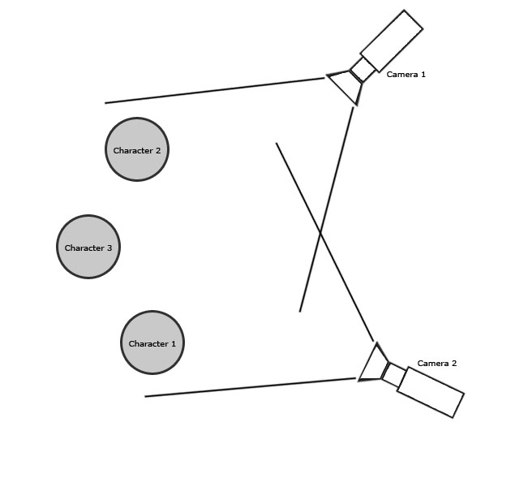
図 21.3 -この図は複数のカメラが被写体にフォーカスを合わせている様子を示しています。 編集によ ってこれらのカメラのカットを作成できます。
インゲームレンダリング vs. プリレンダリング
特に過去において、カットシーンに関連して時にはゲーマーをうんざりさせ、時には虜にした側面の 1 つとして、インゲームシネマティック シーケンスとプリレンダリングシーケンスの差異を挙げることができます。 インゲーム シネマティクスはリアルタイムで生成され、ゲーム専用のアート資産とレンダリング エンジンを使ってレンダリングされます。 プリレンダリング シネマティクスは個別の高解像度アート資産を使って作成され、作成やレンダリングには通常 3D アプリケーションが使われる点で前者と異なり、 生成されたムービーはゲーム内で単にムービーとして再生されるだけです。 Unreal Engine 3 の登場とレンダリング システムの品質により、これらのテクニックは見分けがつきにくくなりました。 ゲーム内で（それ故にインゲーム シネマティクス内で）使用されるアート資産の視覚的な忠実度は、現代のフィルムの多くで使用されている高解像度のアート資産と同じです。 Matinee (マチネ) システムも完全な改革を経て、完全機能が搭載されたノンリニアエディタに変身しました。 以前のプリレンダリングシーケンスにのみ見られた品質に匹敵するシネマティック シーケンスが、UnrealEd 内部で直接作成され、ゲームプレイ中にリアルタイムで再生できるようになり、作成も簡単に行えるようになりました。 これは開発者にとって、ゲームと、ゲームで使用するシネマティック シーケンス、さらにマーケティング目的に使用するシネマティック シーケンスの間でアート資産を共有できることを意味します。 そのため、自社内でシネマティック シーケンス作業に費やす時間が低減し、他のスタジオにシネマティクス作成をアウトソースするための費用も抑えられます。 さらに、シネマティック シーケンスと実際のゲームプレイの外観のギャップもなくなります。 これはゲーマーにとっても長い間の障害でした。 ゲームのコマーシャルが驚くほど真に迫っているのに、 ゲームを買って家でプレイを始めた途端にコマーシャルとは似ても似つかぬものだと分かりがっかりしたものですが、 Unreal Engine 3 に搭載された機能により、このギャップも過去のものとなりました。Camera アクタ
Camera アクタは、Unreal Engine 3 で現実世界のカメラを仮想的に表す手段として使用します。 アクティブなカメラは、その時点でシーンをレンダリングする視点の役割を果たします。 Matinee で Director トラックを使用することで、カメラのカットやフェードイン/アウトを行い、従来のフィルムに見られるのと同じような変化を創り出すことができます。 カメラのズームイン/アウトにより、特定エリアにフォーカスしたり、プレーヤーに見せるシーンの範囲を広げることもできます。 さらに各カメラごとに一連のポストプロセス設定を設け、これを使ってレベルの現在のポストプロセス設定をオーバーライドして、各カメラにユニークなエフェクトを適用できるという可能性も生まれます。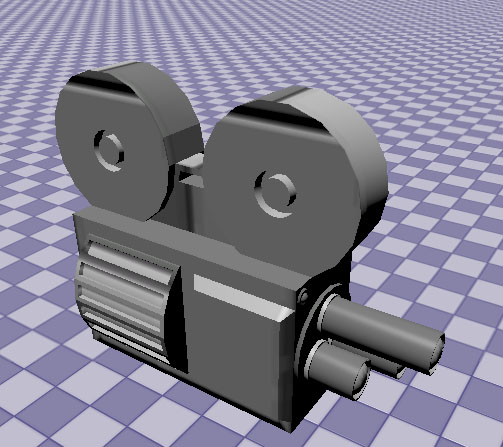
図 21.4 - Camera アクタ
Camera アクタのプロパティ
Camera アクタのプロパティを以下に示します。これらは、カメラを視点としてレンダリングするシーンの外観を変更するのに使用します。AspectRatio
レンダリングするシーンの高さに対する幅の比率を設定します。 典型的なアスペクト比は、1.33 (テレビまたはコンピューターモニタの標準アスペクト比) と 1.78 (ワイドスクリーンテレビまたはコンピューターモニタのアスペクト比) です。bConstrainAspectRatio
AspectRatio プロパティで設定されたアスペクト比でシーンをレンダリングし、カメラのアスペクト比と異なる場合にはウィンドウ内にレターボックス (黒い帯) を追加するか、ウィンドウまたはカメラのいずれのアスペクト比に関係なくウィンドウ全体を埋めるようにシーンをレンダリングするかを選択します。FOVAngle
カメラの FOV (視野) 、つまり表示角度量を設定します。 これを調整することで、カメラの効果的なズームインズームアウトが行われます。bCamOverridePostProcess
True の場合、このカメラがアクティブなときは、カメラの CamOverridePostProcess 設定が現在のポストプロセス設定をオーバーライドします。 False の場合、このアクタの CamOverridePostProcess 設定は無視されます。CamOverridePostProcess
このカメラの bCamOverridePostProcess プロパティに応じて使用される、ポストプロセス設定のセットです。 これらのプロパティの完全な説明は、第 19 章「ポストプロセスエフェクト」にあります。カメラ エフェクト
現実の世界 vs. バーチャルワールド
前述したように、基本的にシネマティック シーケンスの作成とはゲーム中のプレーヤーに見せるバーチャルフィルムを作成することに過ぎません。 このバーチャルフィルムをより面白く信憑性のあるものにする方法の 1 つは、フィールド深度またはモーション ブラーなどのエフェクトを追加することです。 従来のフィルムでは、カメラやレンズ本来の機能やシーンとの相互作用が存在することから、これらのエフェクトはカメラとレンズの操作により作成されるものですが、 Unreal Engine 3 ではこれらのフィルム制作プロセスを模倣するために、ポストプロセス エフェクトと他の機能を使い、従来のフィルムメーカーが用いた手法をバラバラに解体し、 シネマティック シーケンスを作成する際にこのカメラ操作によるエフェクト作成とフィルムの知識を非常に役立てています。フィールド深度
フィールド深度 は、一定の深度でオブジェクトにフォーカスを与え、同時に他のオブジェクトからフォーカスが外れて、ぼやけたように見せるのに使用します。 これは、シーンの特定エリアにプレーヤー注意を向けるのに適しています。 また、フォーカスを失ったカメラが捉えたシーンや、または眠っていたり意識を失っていたプレーヤーが目覚めたときに捉えるシーンのエフェクトを作成するのに使用することもできます。 現実世界のカメラでは、フィールド深度は F値 (F ストップとも呼ばれます) として知られているカメラの相対的な絞り値に基づいています。 これは、入射瞳の直径（または光の入射口）に対するレンズの焦点距離の比率です。 F値を上げるとフィールド深度エフェクトが増大しますが、受け取る光の量は減少します。 Unreal Engine 3 では、シーンで FocusInnerRadius までに存在する他のオブジェクトにブラーエフェクトを徐々に適用する間に、カメラからの明確な指定距離 (FocusDistance) でオブジェクトをレンダリングすることでフィールド深度が発生します。 現実世界とは異なり、Unreal Engine 3 内ではフィールド深度はライトの制限を受けませんが、主な原理と最終結果は同じであることは変わりありません。
図 21.5 - フィールド深度の結果が表示されています。
モーション ブラー
モーション ブラーは、カメラに相対的に移動するシーンオブジェクトが、移動方向に合わせてぼやけて見えるエフェクトです。 これを使ってシーン内のオブジェクトの移動量を誇張したり、動きがプレーヤーからよく見えるようにします。 さらに、カメラを突然動かしてより現実味を出すこともできます。 現実世界では、モーション ブラーは入光量とフィルムの露光時間に基づいています。 基本的に、シャッタースピードによって決まる一定時間のシーンをフィルムが捉え、それ故にシーン内でカメラに相対的に移動するオブジェクトの位置もそこに撮り込まれます。 その結果、移動オブジェクトがぼやけて見えるわけです。 Unreal Engine 3 では、シーンを何度もレンダリングしてそれらをフレームごとに 1 つのイメージに合成することは、許容範囲のフレームレートでゲームの実行を続けるためには適していません。 その代わりに、移動速度ベースの段階的ブラーを移動オブジェクトの範囲に適用し、これをうまく利用することで標準のモーション ブラーが提供する動きの様子を表すことができます。 これをシーン内で移動する個々のオブジェクトに適用することも、カメラが非常に速く移動する場合などはシーン全体に適用することもできます。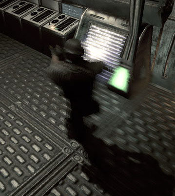
図 21.6 - モーションブラーによってこのオブジェクトはカメラを横切るときにぼやけて見えます。
視野
視野 (field of view) とは、任意の一時点においてカメラから見える角度範囲または角度数のことです。 視野の調節は、シーンの特定領域にズームインして詳細を表示したり、プレーヤーが見る必要があるものに注意を向ける手段です。 現実世界のカメラを扱う場合は、視野はフィルムサイズ、使用レンズの焦点距離、そのレンズによるディストーション量によって決定されます。 角度、望遠などのように、レンズが視野角別に分類されることがよくあります。 これらのタイプのレンズを使用する場合は、異なる視野を求めてレンズを交換する必要があります。 さらに、焦点距離を調整してズームエフェクトを生成できるズームレンズもあります。 Unreal Engine 3 では、各カメラに FOV と呼ばれる固有の視野設定があります。 このプロパティの値は、本物のカメラと同様にカメラに収まる角度です。 シネマティック中にプレーヤーに注目してもらいたいところで、カメラの FOV を調節してキャラクターまたは環境にズームインできます。 FOV 値を上げるとズームアウト、下げるとズームイン効果が得られます。
図 21.7 - これらの 2 つのショットは FOV の使用によるカメラのズームイン効果を示しています。
シーン エフェクト
シーンエフェクトは、シーンのカラー範囲、彩度またはコントラストを変更するのに使用します。 これは、シネマティックシーケンスに特定のムードや雰囲気を作り出すのに優れた方法です。 シーンエフェクトを使ってセピアトーンのイメージを作成したり、シンプルなモノクロイメージを作ることができます。 フラッシュバックの間に使用して、時が流れたという意識を生み出したり、ノスタルジックな感傷をかもし出すことができます。 可能性はほぼ無限といえます。 従来のカメラとフィルムでは、通常このようなエフェクトは現像中にフィルムを直接操作するか、またはレンズフィルタを用いて創り出します。 特定の色の消し込み、特定の色やコントラストの強調、その他無数の機能を実行する数種類のフィルタが用意されています。 Unreal Engine 3 の Camera アクタでは、デザイナーがローライト (SceneShadows) とハイライト (SceneHighlights) の赤、緑、青のチャンネルを制御し、個々のカラーコンポーネントの強弱を調整することができます。 SceneMidtones プロパティによるガンマカーブの調整機能 (コントラストの調整) も提供されています。 SceneDesaturation プロパティを調整してシーン全体の彩度を落とすこともできます。
図 21.8 - 左側が元のショットで、右側のショットにはシーンエフェクトが適用されています。
ライティングによるイメージ切り離し
改良された Unreal Engine 3 のグラフィック機能と、サーフェス面の一貫したライティングにより、キャラクターや環境が 1 つのコヒーレント (一貫した) シーンに統合される様子をより簡単に表せるようになりました。 時にはあまりにも上手く作用して、キャラクターが完全にシーンにブレンドしてしまい、区別が難しくなることがあります。 このような状況では環境からキャラクターを分離することが重要で、これにはリムライティングなどの微妙なライティングキューを使用します。 リムライティングとは、基本的にはアクセントライトまたはシェーダー設定を使い、キャラクターのシルエットに沿ってハイライトを作成することです。 これにより視覚的に素晴らしい外観が得られるほか、キャラクターをシーンのフォーカスにしておくのに足りる程度に浮かびあがらせます。 このエフェクトはわずかに抑えておくのがコツです。リムライティングが強すぎると、シーンの現実味が損なわれてしまします。DumpMovie コマンド
Unreal Engine 3 では、シネマティック シーケンスの各フレームを、外部アプリケーションでひとつのムービーファイルに合成できるうように個別の画像ファイルに書き出す機能も提供しています。 これらのスタンドアロンのムービーファイルは、もちろん法的問題に配慮した上で、インターネットで公開したり、コマーシャルに含めて、ゲームまたは MOD のプロモーション目的で使用することができます。 シネマティックさえ作成すれば、このプロセスは非常に簡単です。 必要な作業は、コマンドラインで、シネマティックを含むマップファイルの名前に続けて -dumpmovie スイッチを指定し、ゲームの実行ファイルを起動するだけです。 ゲームの Screenshots フォルダ内に、各フレームの .BMP 画像ファイルが生成されます。 -benchmark スイッチを使って、ゲームの実行速度を 1 秒当たり 30 フレームに制限することもできます。 または、必要に応じて -ResX= と -ResY= スイッチを使い、実行ゲームの解像度を指定できます。 完全なコマンドは次のようになります。 ExampleGame CinematicsDemo -dumpmovie -benchmark -resx=1280 -resy=720 このコマンドは ExampleGame を起動し、280x720 の 解像度、30 fps で CinematicsDemo マップを実行しｋ各フレームの画像を作成します。まとめ
この章で説明したツール、テクニック、エフェクトを使用し、映画作りの良いセンスとドラマへの情熱があれば、よく練られたキャラクター、興奮を呼ぶゲームプレイ、フィルム品質のビジュアル進行を駆使した、人を惹きつけるストーリーを生み出す力を、Unreal Engine 3 がデザイナーの手に直接与えてくれます。 シネマティックシーケンスは、シーンを引き継ぐことも、シーンに統合することもできます。または、ゲームでフレームとして書き出して、スタンドアロンムービーに合成することもできます。 イマジネーションと創造性さえあれば、可能性は無限です。チュートリアル 21.1 キャラクター設定
このチュートリアルセットのコースでは、キャラクターが通路を走り去るシネマティックシーケンス (またはカットシーン) を作成します。 途中で爆発が 4 回発生し、爆風でプレーヤーがあちこちに振り飛ばされます。 シーケンスには 2 つのカメラカットが含まれ、フェードと Slomo (スローモーション) を使用します。 また、視野 (または FOV) の設定のほかに Camera アクタ本体の特定のプロパティ (フィールド深度ポストプロセス設定など) を変更します。 シーケンス全体のバックに音楽を流し、よりシネマティックな雰囲気を与えます。 1. Cinematics_Demo マップを開きます。 このマップは、作成するシネマティック シーケンスのシーンになります。 長い通路で構成され、キャラクターは爆発であちこちに飛ばされながら走り抜けます。
図 21.9 - このマップは比較的単純な通路を示しています。 2. 最初に行わなければならないのは、レベル内にキャラクターを配置することです。 Matinee (マチネ) 内でアニメーションのブレンドが行える、SkeletalMeshActorMAT という特別なアクタを使用します。 汎用ブラウザで、COG_Grunt パッケージから COG_Grunt_AMesh アセットを選択します。 Perspective ビューポートで通路の床を右クリックし、[Add Actor] (アクタを追加)->[SkeletalMeshActorMAT: SkeletalMesh COG_Grunt.COG_Grunt_AMesh] を選択してアクタを配置します。 注意: ブレンド アニメーションについては、「第 20 章: アニメーションシステム」で詳細に説明しています。

図 21.10 - レベルにアクタを配置します。 3. キャラクターのピボットが通路中央に来るように移動します。 移動の結果、キャラクターが通路横に外れてしまう点に注意してください。 4. アクタを選択し、F4 を押してプロパティを開きます。 5. [Movement] (運動) セクションで、Physics (物理) プロパティを PHYS_Interpolating に設定します。 この設定が必要なのは、Matinee を使ってプレーヤーの動きを制御するためです。 6. SkeletalMeshActor セクションを展開し、次に LightEnvironment セクションを展開して LightEnvironmentComponent の下にある bEnabled プロパティを選択します。 7. 次に、SkeletalMeshActor セクションの SkeletalMeshComponent セクションを展開し、最後に SkeletalMeshComponent サブセクションまでスクロールします。 8. Generic ブラウザの CinematicsDemoContent パッケージから animTree_grunt アセットを選択します。 AnimTree プロパティの [Use Current Selection in Browser] (ブラウザにある現在の選択を使う) ボタンを押します。 この AnimTree は、アニメーションのブレンドができるように設定されています。 9. 次に、Top ビューポートで見て通路の上方にアクタを配置します。 Y 軸方向では通路中央、X 軸方向では通路端から約 144 ユニット離れた位置に置きます。 さらに、メッシュ足が通路の床と水平になるようにアクタを上方向に移動します。 次に、キャラクターが反対側の端を向くように回転します。 メッシュではなく、ピボットでが通路の中央にあることを確認してください。 適切に配置されている場合、キャラクターの手が壁から少し出ているのが見えるはずです。

図 21.11 - ピボットが通路の中央に位置し、キャラクターの手が壁から出ているのがわずかに見えます。 10. マップに加えた作業を保存します。 <<<< チュートリアル終了 >>>>
チュートリアル 21.2 Kismet の初期設定
1. 前のチュートリアルから続けて、Cinematics_Demo マップを開きます。 2. シネマティック モードのオン/オフを切り替え、Matinee シーケンスを再生し、アニメーションが終了すると骨格メッシュ アクタを非表示にするネットワークを Kismet で設定する必要があります。 Kismet を開き、ワークスペースを右クリックします。 [New Event] (新しいイベント) -> [Level Startup] (レベル スタートアップ) を選択します。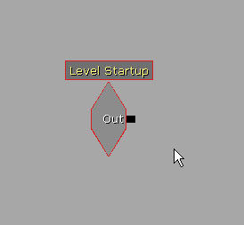
図 21.12 - Level Startup を追加します。 3. Level Startup イベントの右側を右クリック して [New Action] (新しいアクション) -> [Toggle] (トグル) -> [Toggle Cinematic Mode] を選択し、Toggle Cinemtaic Mode アクションを追加します。 このアクションのプロパティのデフォルト設定は、このチュートリアルで使用するのに適切な設定です。 このアクションはすべての入力とプレーヤーの動きを無効にし、プレーヤーのメッシュと HUD を非表示にします。

図 21.13 - このノードがシネマティックモードを開始します。 4. 右クリックして [New Variable] (新しい変数) -> [Object] (オブジェクト) -> [Player] を選択し、Player 変数を新規作成します。 Player 変数を Toggle Cinematic Mode アクションの Target リンクにつなぎます。

図 21.14 - 新しい Player 変数をつなぎます。 5. Level Startup イベントの Out リンクを Toggle Cinematic Mode アクションの Enable リンクにつなぎます。

図 21.15 - この図のようにノードをつなぎます。 6. Toggle Cinematic Mode アクションの右側を右クリックして [New Matinee] を選択し、新しい Matinee を作成します。 Toggle Cinematic Mode の Out リンクを Matinee の Play リンクにつなぎます。
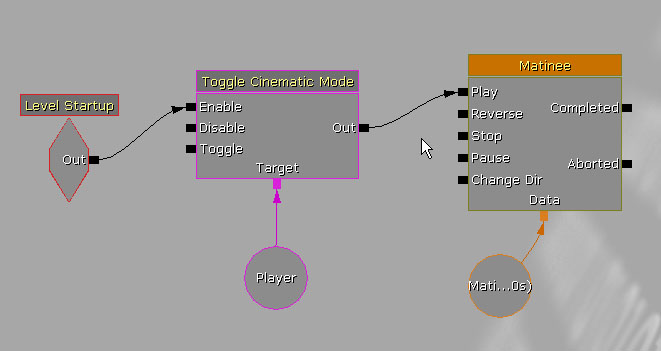
図 21.16 - 新しい Matinee を作成して接続します。 7. Toggle Cinematic Mode と、先に作成した Player 変数を選択し、Ctrl + C キーと Ctrl + V キーを押して複製します。 Matinee シーケンスにつながっているラインの接続を解除し、新規作成したオブジェクトを Matinee の右に移動します。 このアクションにより、プレーヤーのメッシュと HUD が見えるようになるほか、インプットと移動も可能になり、基本的には通常再生に戻ります。

図 21.17 - Toggle Cinematic Mode と Player ノードを複製して配置します。 注意: グループやトラックを新たに追加するにつれて、Matinee シーケンス オブジェクが非常に大きくなります。 重なり合わないように、これと後続のシーケンス オブジェクトをすべて右または上下のいずれかの方向に移動することをお勧めします。 8. Matinee の Completed リンクを新しい Toggle Cinematic Mode アクションの Disable リンクにつなぎます。 9. 新しい Toggle Cinematic Mode アクションの右側を右クリックして、[New Action] -> [Teleport] を選択します。 これを新しい Toggle Cinematic Mode の Out につなぎ、Player 変数を Teleport の Target リンクにつなぎます。 Teleport アクションは、シネマティックシーケンスの終了時にプレーヤーのメッシュをメッシュの元の位置に移動します。
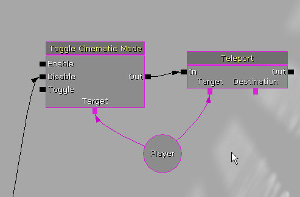
図 21.18 - 新しい Teleport ノードを作成して接続します。 10. ビューポートで、SkeletalMeshActorMAT を選択します。 次に Teleport アクションの Destination リンクを右クリックし、[New Object Var Using SkeletalMeshActorMat_0] を選択します。

図 21.19 - Teleport を今から骨格メッシュにつなぎます。 11. Teleport アクションの右側を右クリックし、[New Action]->[Toggle] -> [Toggle Hidden] を選択して Toggle Hidden アクションを作成します。 このアクションは、骨格メッシュアクタを非表示にして見えなくします。 12. Teleport アクションの Out リンクを、Toggle Hidden アクションの Hide リンクにつなぎます。 次に、SkeletalMeshActorMAT_0 変数を Toggle Hidden アクションの Target リンクにつなぎます。
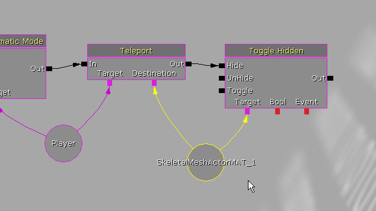
図 21.20 - これで Teleport アクションの後に骨格メッシュが非表示になります。 13. マップに加えた作業を保存します。 <<<< チュートリアル終了 >>>>
チュートリアル 21.3 キャラクターの移動をブロックアウト
1. 前のチュートリアルから続けて、Cinematics_Demo マップを開きます。 2. ビューポートで SkeletalMeshActorMAT を選択して Kismet を開きます。 次に、Matinee シーケンスをダブルクリックし、Matinee エディタを開きます。
図 21.21 - Matinee エディタ 3. [Group/Track] (グループ/トラック) リストを右クリックして [Add New Group] (新しいグループを追加) を選択し、新しいグループを作成します。 表示されるダイアログで、新しいグループに「Grunt」という名前を付けて [OK] を押します。 新しいグループが作成され、それに選択されていたアクタがつながります。これによって、このグループ内のすべてのトラックが、先に配置した SkeletalMeshActorMAT の作用を受けることになります。
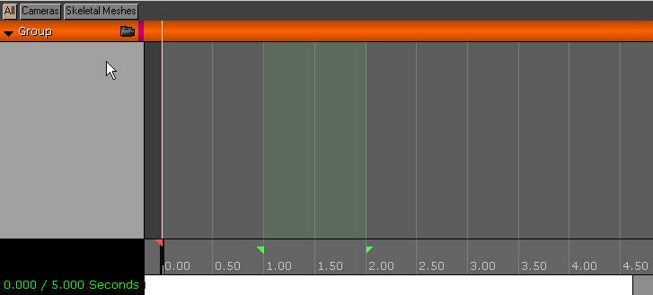
図 21.229 - Grunt イベントを新規作成します。 4. 作成した Grunt グループを右クリックし、[Add New Movement Track] (新しい Movement トラックを追加) を選択します。 Grunt グループに新しいトラックが追加され、Time=0.0 の位置に先頭キーが設定されます。
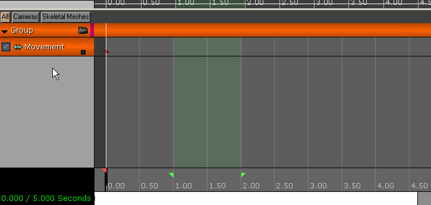
図 21.23 - 新しい Movement を追加します。 5. シーケンス終了インジケータ (小さな赤い三角形) を Time=13.0 の位置に移動し、シーケンスの長さを 13 秒にします。 6. タイムスライダを Time=10.0 に移動して Enter キーを押し、その時間に新しいキーを配置します。 新しいキーを右クリックして [Interp Mode] (補間モード) -> [Linear] (線形) を選択します。 これにより、アニメーション時間中にアクタが一定速度で移動します。緩急の変化、つまりゆっくり始まり、アニメーションの中ごろまで速くなり、終わり近くで遅くなる、という変化はありません。 7. 新しいキーをクリックし、選択されていることを確認します。 この動作により、エディタはこのキーの編集モードに入ります。これは、ビューポートの左下隅に「ADJUST KEY: 1」(調整中のキー: 1) というテキストが表示され、Matinee エディタの左下隅に「?」が表示されることで確認できます。 8. ビューポートでは、SkeletalMeshActorMAT が自動的に選択されているはずです。 Top ビューポートで、アクタを通路の反対側の端にドラッグします。 ビューポートに、Matinee (マチネ) シーケンス中にアクタが通る経路 (パス) を表すカーブが現れます。

図 21.24 - メッシュの軌跡を示すラインが現れます。 9. タイムスライダがシーケンスの先頭にある状態で Matinee エディタの [Play] (再生) ボタンを押して、SkeletalMeshActorMAT の動きをプレビューします。 通路の端から端まで一定速度で移動します。 注意: シーケンス全体を再生するために、Matinee でループインジケータ (小さなグリーンの三角形) を移動しなければならない場合があります。 10. マップに加えた作業を保存します。 <<<< チュートリアル終了 >>>>
チュートリアル 21.4 ベースアニメーション トラック
1. 前のチュートリアルから続けて、Cinematics_Demo マップを開きます。 2. Kismet を開いて Matinee シーケンスをダブルクリックし、Matinee エディタを開きます。 3. 次に、シーケンス全体を通して 1 つのベースアニメーションを再生し、後で別のアニメーションにブレンドします。 このチュートリアルでは、このベースアニメーションを設定します。 Generic ブラウザで、COG_Grunt パッケージから COG_Grunt_BasicAnims アセットを選択します。 次に、Matinee で Grunt グループを選択し、GroupAnimSets 配列のプロパティに 2 つの項目を新規追加します。 スロット [0] の [Use Current Selection In Browser] (ブラウザで現在選択されている項目を使用) ボタンを押します。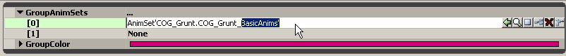
図21.25 - GroupAnimSets プロパティのスロット [0] に、BasicAnims を追加します。 4. 次に、Generic ブラウザで COG_Grunt パッケージから COG_Grunt_EvadeAnims アセットを選択し、スロット [1] の [Use Current Selection In Browser] ボタンを押します。 5. Grunt グループを右クリックし、[Add New Anim Control Track] (新規 Anim Control トラックを追加) を選択します。 表示されるダイアログのリストから FullBody スロットを選択し、[OK] を押します。
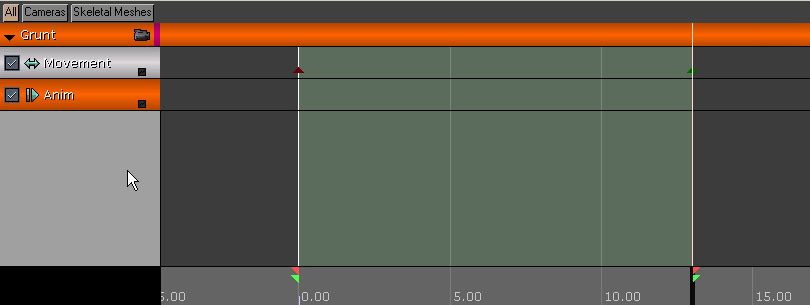
図 21.26 - 新しいアニメーション操作トラックを追加します。 6. タイム スライダが Time=0.0 にある状態で Enter キーを押し、キーを配置します。 表示されるダイアログのリストから Run_Fwd_Rdy_01 アニメーションを選択し、[OK] を押します。 アニメーションがブルーのバーとして現れ、その全長を示します。 7. キーを右クリックして [Set Looping] (ループ設定) を選択します。 アニメーションがシーケンスの長さに広がります。 8. トラックの右下隅にある小さなボックスをクリックして、カーブ エディタにトラックのカーブ情報を送信し、ツールバーの [Toggle Curve Editor] ボタンを押してカーブ エディタを開きます。 9. カーブ情報は、再生されるアニメーションの重み付けを表します。 Ctrl キーを押しながら、カーブの Time-0.0 の位置を左クリックします。 新しいポイントを右クリックして [Set Value] (値を設定) を選択します。 値を 1.0 に設定します。 これで、アニメーションに完全なウェイトが付きました。

図 21.27 - 値を 1.0 に設定します。 10. Perspective ビューポートでリアルタイムのプレビューが有効であることを確認し、Matinee の [Play] ボタンを押します。 キャラクターが通路を走りながら移動するアニメーションが再生されるはずです。

図 21.28 - キャラクターが走っています。 11. マップに加えた作業を保存します。 <<<< チュートリアル終了 >>>>
チュートリアル 21.5 カメラ 1 の設定とブロッキング
1. 前のチュートリアルから続けて、Cinematics_Demo マップを開きます。 2. Genericブラウザを開いて [Actor Classes] (アクタクラス) タブを選択します。 ツリー リストから CameraActor クラスを選択し、ビューポートで右クリックして [Add CameraActor Here] (CameraActor をここに追加) を選択します。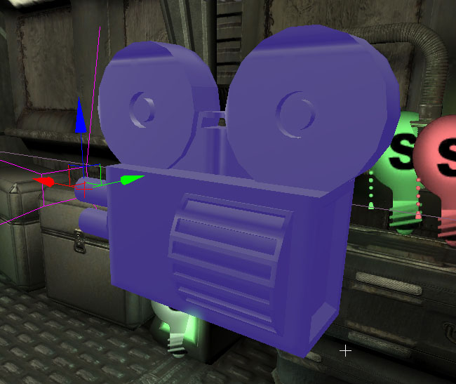
図 21.29 - 新しい Camera アクタを配置します。 3. 通路でキャラクターが走り始める側のドアの上方、キャラクターの左側、通路と同じ長さに伸びるパイプの真下にカメラを配置します。 カメラが通路のもう一方の端を向くように回転します。 Top ビューポートでは、左向きになります。
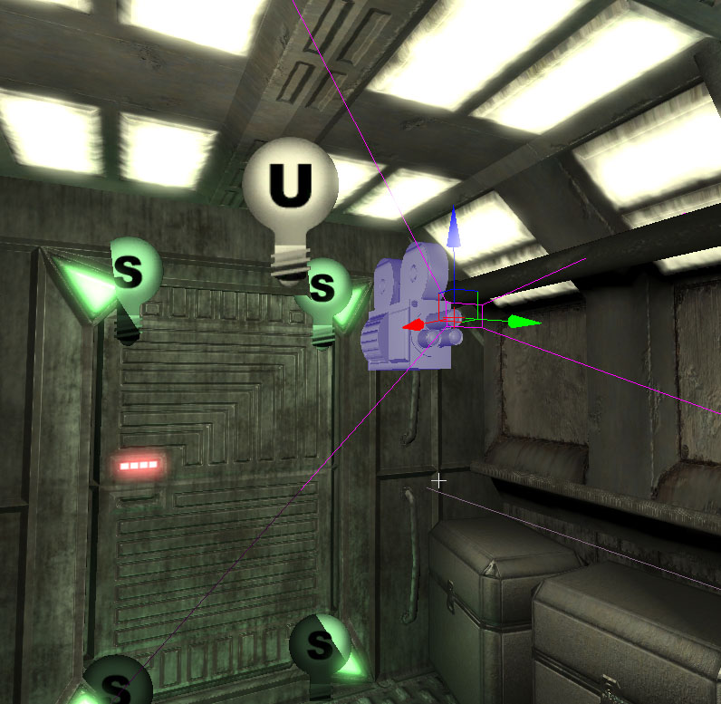
図 21.30 - この図のようにカメラを配置します。 4. カメラを選択した状態で、F4 を押してカメラのプロパティを開きます。 [Camera] セクションで、bCamOverridePostProcess プロパティをオンにし、bConstrainAspectRatio プロパティをオフにします。 5. CamOverridePostProcess を展開し、以下のように設定します。
- bEnableDOF: True
- bEnableMotionBlur: True
- BloomScale: 0.5
- DOF_BlurKernelSize: 4.0
- DOF_FocusInnerRadius: 750.0
- MotionBlur_Amount: 4.0
- MotionBlur_FullMotionBlur: False
- Scene_Desaturation: 0.425
- Scene_Highlights:
- X: 0.7
- Y: 0.8
- Z: 0.9
- Scene_MidTones:
- X: 1.2
- Y: 1.1
- Z: 1.0
- Scene_Shadows:
- X: 0.0
- Y: 0.005
- Z: 0.01

図 21.31 - 新しい Camera1 グループを追加します。 8. Camera1 グループを右クリックし、[Add New Movement Track] (新規 Movement トラックを追加) を選択します。
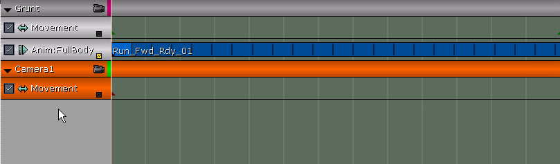
図 21.32 - カメラの新しい Movement トラックを追加します。 9. Movement トラックのプロパティで以下のように設定します。
- LookAtGroupName: Grunt
- RotMode: IMR_LookAtGroup
チュートリアル 21.6 カメラ 2 の設定とブロッキング
1. 前のチュートリアルから続けて、Cinematics_Demo マップを開きます。 2. ここまで学習したスキルを用いて、2 つ目の CameraActor を作成し、通路の反対側の端のドアの上に配置します。
図 21.33 - 新しいカメラが通路を反対側から見下ろしています。 3. カメラを選択した状態で、F4 を押してカメラのプロパティを開きます。 [Camera] セクションで、bCamOverridePostProcess プロパティをオンにし、bConstrainAspectRatio プロパティをオフにします。 4. CamOverridePostProcess を展開し、以下のように設定します。
- bEnableDOF: True
- bEnableMotionBlur: True
- BloomScale: 0.5
- DOF_BlurKernelSize: 4.0
- DOF_FocusInnerRadius: 750.0
- MotionBlur_Amount: 4.0
- MotionBlur_FullMotionBlur: False
- Scene_Desaturation: 0.425
- Scene_Highlights:
- X: 0.7
- Y: 0.8
- Z: 0.9
- Scene_MidTones:
- X: 1.2
- Y: 1.1
- Z: 1.0
- Scene_Shadows:
- X: 0.0
- Y: 0.005
- Z: 0.01
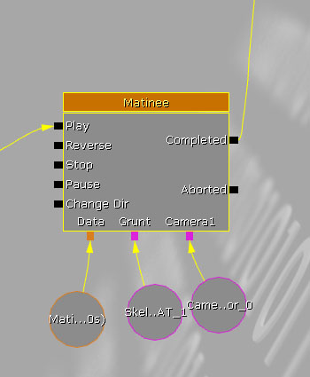
図 21.34 - 新しい Camera2 グループを追加します。 7. Camera2 グループを右クリックし、[Add New Movement Track] (新規 Movement トラックを追加) を選択します。
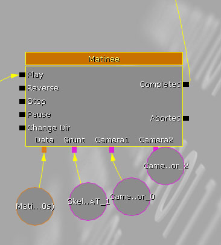
図 21.35 - グループに新しい Movement トラックを追加します。 8. Movement トラックのプロパティで以下のように設定します。
- LookAtGroupName:
- GruntRotMode: IMR_LookAtGroup
チュートリアル 21.7 Music トラック
1. 前のチュートリアルから続けて、Cinematics_Demo マップを開きます。 2. 通路の端から端まで移動するキャラクターをカメラが追いかける、という非常に基本的なブロッキングを設定しました。 次は、これに映画音楽的なミュージックを付けましょう。 これをタイミングイベントの基準として使用することができます。 Generic ブラウザで、CinematicDemo パッケージから cinematic_scoreCue アセットを選択します。 3. Kismet を開いて Matinee シーケンスをダブルクリックし、Matinee エディタを開きます。 [Group/Track] リスト内の空のエリアを右クリックして、[Add New Group] を選択します。 新しいグループに「Score」という名前を付けて [OK] を押します。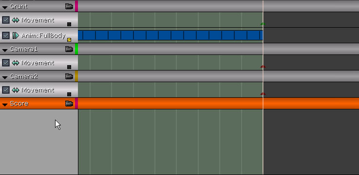
図 009 - Score グループを新規作成します。 4. Score グループを右クリックし、[Add New Sound Track] (新規 Sound トラックを追加) を選択します。 5. タイム スライダが Time=0.0 にある状態で Enter キーを押し、新しいキーを配置します。 これはサウンドキューの長さを示すグリーンのバーとして現れ、サウンドキューの名前を表示します。
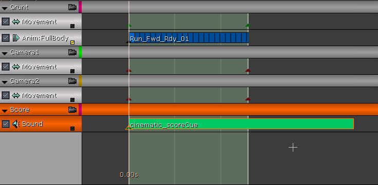
図 21.37 - サウンドの長さが可視化されました。 6. キーを選択して右クリックします。 [Set Sound Volume] (サウンド ボリュームを設定) を選択します。 ボリュームを 2.0 に設定します。 7. Matinee で [Play] ボタンを押し、シーケンスを再生します。 シーケンスに合わせて曲が再生されます。 曲中に特徴のある箇所が数か所あることが分かります。 これらは、次のチュートリアルでカメラカットを配置するキューになります。 8. マップに加えた作業を保存します。 <<<< チュートリアル終了 >>>>
チュートリアル 21.8 カメラ編集、パート I: カット
1. 前のチュートリアルから続けて、Cinematics_Demo マップを開きます。 2. Kismet を開いて Matinee シーケンスをダブルクリックし、Matinee エディタを開きます。 3. [Group/Track] リスト内の空のエリアを右クリックして、[Add New Director Group] (新しいディレクタグループを追加) を選択します。 Director トラックに「DirGroup」という名前の新しいグループが追加されます。 このトラックを使ってシネマティックのカメラカットを作成します。
図 21.38 - 新しい Director トラックを作成します。 4. シーケンスを数回再生し、音楽が変化する場所を書き留めます。 Time=3.7、Time=5.8 あたりで変化が起きるはずです。 カメラカットのキーを配置するときにこれらの時間を使います。 5. タイムスライダが Time=0.0 にある状態で Director トラックを選択して Enter キーを押し、新しいキーを追加します。 表示されるダイアログで、ドロップダウンリストから Camera1 グループを選択して [OK] をクリックします。 これにより、シーケンスが開始すると Camera1 グループにつないだカメラがアクティブになります。 6. タイムスライダを Time=3.7 (またはそれに出来るだけ近い位置。キーの正確な位置は作成後に調整できます) に移動して Enter キーを押し、キーをもうひとつ配置します。 ここではドロップダウンリストから Camera2 グループを選択して [OK] を押します。
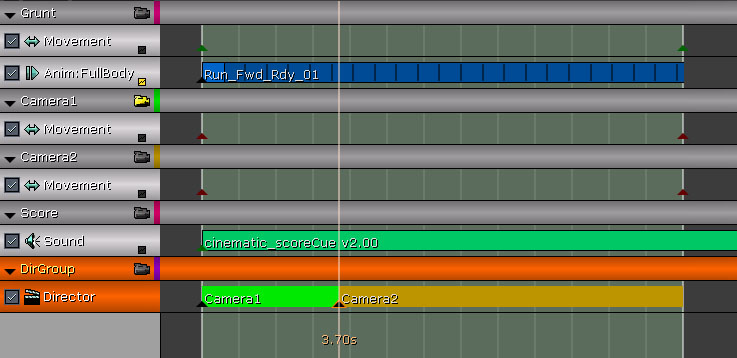
図 21.39 - Camera2 に切り替えます。 7. 新しいキーを選択して右クリックします。 [Set Time] (時間を設定) を選択し、キーの時間を 3.7 に設定します。 8. タイムスライダを Time=5.8 (または、この場合も出来るだけ近い位置) に移動して Enter キーを押し、新しいキーを作成します。 このキーに Camera1 グループを選択し、[OK] を押します。 9. 新しいキーを選択して右クリックします。 [Set Time] (時間を設定) を選択し、キーの時間を 5.8 に設定します。

図 21.40 - Time=5.8 で再度 Camera1 に切り替えます。 10. DirGroup がまだハイライト表示されていない場合はカメラアイコンをクリックして、Matinee で [Play] ボタンを押します。 Perspective ビューポートで [Realtime Preview] (リアルタイムプレビュー) がオンに設定されていることを確認します。 最初のカメラの視点からシーケンスが再生され、2 番目のカメラに場面変換し、最初のカメラに戻るのが分かります。 11. マップに加えた作業を保存します。 <<<< チュートリアル終了 >>>>
チュートリアル 21.9 カメラ編集、パート II: Slomo (スローモーション)
1. 前のチュートリアルから続けて、Cinematics_Demo マップを開きます。 2. Kismet を開いて Matinee シーケンスをダブルクリックし、Matinee エディタを開きます。 3. DirGroup グループを右クリックし、[Add New Slomo Track] (新規 Slomo トラックを追加) を選択します。 このトラックを使って、Camera2 カメラがアクティブの間にシネマティック内のアクションをスローモーションに切り替えます。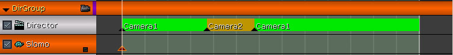
図 21.41 - 新しい Slomo トラックを追加します。 4. タイム スライダが Time=0.0 にある状態で Enter キーを押し、新しいキーを追加します。 これは Slomo トラックの初期値を設定するのに使用します。 5. キーを選択して右クリックし、[Set Value] を選択します。 デフォルトでキーの値は 1.0 に設定されているはずですが、値が異なる場合は 1.0 に設定します。

図 21.42 - 最初のキーの値が 1 であることを確認します。 6. キーをもう一度右クリックして、[Interp Mode] (補間モード) -> [Constant] (定数) を選択します。 これにより、トラックのカーブの値はそのままになり、次のキーに達したときにそのキーの値になります。 7. タイムスライダを Time=3.7 (または、出来るだけ近い位置) に移動して Enter キーを押し、キーをもうひとつ配置します。 8. 新しいキーを選択して右クリックします。 [Set Time] (時間を設定) を選択し、キーの時間を 3.7 に設定します。 9. キーを再度右クリックして [Set Value] を選択します。 このキーの値を 0.2 に設定します。 これによって、シーンのアクションが通常の 20% の速さで再生されます。

図 21.43 - Time=3.7 でスローモーションが発生します。 10. キーをもう一度右クリックして、[Interp Mode] (補間モード) -> Constant (定数) を選択します。 11. タイムスライダを Time=5.8 (または、この場合も出来るだけ近い位置) に移動して Enter キーを押し、新しいキーを作成します。 12. 新しいキーを選択して右クリックします。 [Set Time] (時間を設定) を選択し、キーの時間を 5.8 に設定します。 13. キーを再度右クリックして [Set Value] を選択します。 このキーの値を 1.0 に設定します。
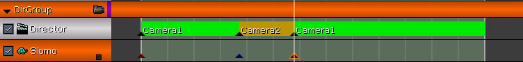
図 21.44 - Time=5.8 で通常の速度に戻ります。 14. Perspective ビューポートでリアルタイムのプレビューがオンになっていることを確認し、Matinee の [Play] ボタンを押します。 2 つ目のカメラに切り替わるとキャラクターの動きが遅くなりますが、音楽は通常の速さで再生を続けます。 15. マップに加えた作業を保存します。 <<<< チュートリアル終了 >>>>
チュートリアル 21.10 カメラ編集、パート III: フェード
1. 前のチュートリアルから続けて、Cinematics_Demo マップを開きます。 2. Kismet を開いて Matinee シーケンスをダブルクリックし、Matinee エディタを開きます。 3. DirGroup グループを右クリックし、[Add New Fade Track] (新規 Face トラックを追加) を選択します。 このトラックを使って、シーケンスの始めにシーンをフェードインし、終わりにフェードアウトします。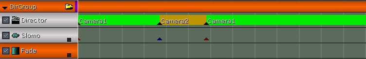
図 21.45 - 新しい Fade トラックを追加します。 4. タイム スライダが Time=0.0 にある状態で Enter キーを押し、新しいキーを追加します。 これは Fade トラックの初期値を設定するのに使用します。 5. キーの値は 0.0 に設定されているはずで、これはデフォルトではシーンが完全に見えることを意味します。 このチュートリアルではシーンが完全なフェードアウトから始まるようにしたいので、 キーを選択して右クリックし、[Set Value] を選択します。 キーの値を 1.0 に設定します。

図 21.46 - これで、開始時にはシーンがブラックアウトされます。 6. タイムスライダを Time=1.0 に移動して Enter キーを押し、新しいキーを配置します。 キーを選択して右クリックします。 [Set Value] (値の設定) を選択し、このキーの値を 0.0 に設定します。
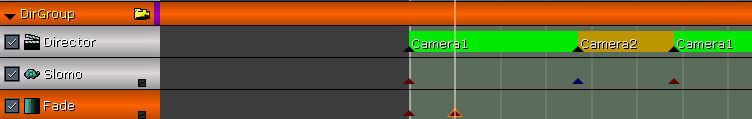
図 21.47 - Time=1.0 の位置でシーンがフェードインします。 注意: このチュートリアルでは、前のチュートリアルほどキーの配置時間に厳密になる必要はありませんが、厳密に設定したい場合は右クリックメニューから [Set Time] 機能を使用することができます。 7. タイムスライダを Time=9.5 に移動して Enter キーを押し、新しいキーを配置します。 これはフェードアウトの開始点になります。 このキーの値は 0.0 に設定されていて、これが適切な値です。 確認したい場合はキーを右クリックして [Set Value] を選択し、必要に応じて値を設定します。 8. タイムスライダを Time=11.0 に移動して Enter キーを最後にもう一度押し、トラックの最後のキーを配置し、キーを選択して右クリックします。 [Set Value] (値の設定) を選択し、このキーの値を 1.0 に設定します。 9. Perspective ビューポートでリアルタイムのプレビューが有効であることを確認し、Matinee の [Play] ボタンを押します。 シーンの開始時にフェードインし、終わりに近づくとフェードアウトします。 10. マップに加えた作業を保存します。 <<<< チュートリアル終了 >>>>
チュートリアル 21.11 カメラ 1 の基本的なフィールド深度エフェクト、パート I: 値を書き留める
1. 前のチュートリアルから続けて、Cinematics_Demo マップを開きます。 2. Kismet を開いて Matinee シーケンスをダブルクリックし、Matinee エディタを開きます。 3. このチュートリアルでは、カメラの DOF_FocusDistance プロパティを制御するトラックを作成します。 このトラックの目的は、通路を移動するキャラクターにフォーカスを保つことにあります。 これを実現するには、キャラクターとカメラの間の距離データが必要なので、 簡単な Kismet ネットワークを作成し、キャラクターが通路を移動する距離を表示します。 次のチュートリアルでは、これらの値をガイドラインとして使い、Matinee 内でトラックのキーを設定します。 Camera1 グループを右クリックし、[Add New Float Property Track] (新規 Float Property トラックを追加) を選択します。 表示されるダイアログで、使用可能なプロパティのリストから DOF_FocusDistance を選択し、[OK] を押します。 Camera_DOF_FocusDistance という名前の新しい トラック が作成されます。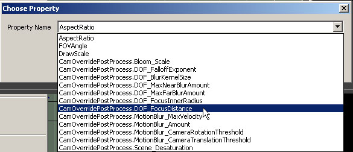
図 21.48 - 新しい Float Property トラックを作成します。 注意: 使用可能なプロパティを表示するダイアログは非常に小さく、プロパティ名が見にくいので、サイズを変更しなければならない場合があります。 4. キーの配置を開始する前に、それらのキーに割り当てる値が必要です。 前述のとおり、Kismet のネットワークを使用すれば、推量に頼らずに必要な値を得ることができます。 Kismet で、Level Startup イベントの右下を右クリックし、[New Action] (新しいアクション) -> [Actor] (アクタ) -> [Get Distance] を選択し、Get Distance アクションを作成します。

図 21.49 - 新しい Get Distance アクションを追加します。 5. Level Startup イベントの Out リンクを Get Distance アクションの In リンクにつなぎます。

図 21.50 - Level Startup を Get Distance につなぎます。 6. ビューポートで CameraActor_0 (または最初のカメラ) を選択します。 次に Get Distance アクションの A リンクを右クリックし、[New Object Var Using CameraActor_0] を選択します。

図 21.51 - 最初のカメラの新しい変数を追加します。 注意: Camera アクタの実際の名前がこのチュートリアルの名前と異なる場合があります。 必ず最初に作成したカメラを選択してください。 7. ビューポートに戻り、SkeletalMeshActorMAT (またはキャラクター) を選択し、Get Distance アクションの B リンクを右クリックして [New Object Var Using SkeletalMeshActorMAT_0] を選択します。

図 21.52 - 次に、骨格メッシュと Camera1 の間の距離を調べます。 8. 次に、Get Distance アクションの Distance リンクを右クリックして、[Create New Float Variable] (Float 変数を新規作成) を選択します。

図 21.53 - Get Distance の新しい float 変数を作成します。 9. Get Distance アクションの右側で、L キーを押しながら左クリックし、新しい Log アクションを作成します。 Log アクションを右クリックして [Expose Variable] (変数を公開) ->[Float] を選択します。 Log アクションの上に Float リンクが現れます。 10. Log アクションの Float リンクを、Get Distance アクションの Distance リンクにつながれた float 変数につなぎます。 11. 次に、Get Distance アクションの Out リンクを Log アクションの In リンクにつなぎます。 12. Log アクションの Out リンクを Get Distance アクションの In リンク につなぎ、ループを形成します。 Log アクションの Out リンクを右クリックし、[Set Activate Delay] (アクティブ化の遅延を設定) を選択します。 リンクの遅延を 0.2 に設定します。
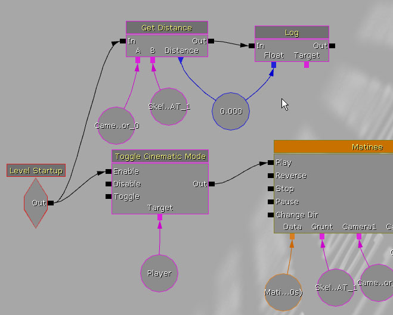
図 21.54 - 画面までの距離値を記録します。 13. 最後に、エディタでマップを再生し、特定の目印 (シーケンスの始まり、キャラクターがカメラの真正面に位置するとき、最初のカメラカットの時間、2 番目のカメラカットの時間、シーケンスの終わり) の距離値を書き留めます。 書き留めた値を以下の値と比較してみてください。 ほぼ同じになるはずです。
- 600.0
- 200.0
- 900.0
- 1850.0
- 2600.0
チュートリアル 21.12 カメラ 1 の基本的なフィールド深度エフェクト、パート II: キーの設定
1. 前のチュートリアルから続けて、Cinematics_Demo マップを開きます。 2. Kismet を開いて Matinee シーケンスをダブルクリックし、Matinee エディタを開きます。 3. このチュートリアルでは、最後のチュートリアルで集めた値を使って最初のカメラの DOF_FocusDistance プロパティを制御するトラックのキーを作成します。 このチュートリアルでは前のチュートリアル中で指定した値を使用しているので、 作業中に記録した値に自由に置き換えてください。 Camera1 グループの Camera_DOF_FocusDistance トラックを選択します。 タイム スライダが Time=0.0 にある状態で Enter キーを押し、最初のキーを配置します。 新しいキーを右クリックして [Set Value] を選択します。 値を 600.0 に設定します。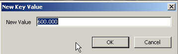
図 21.55 - 最初のキーの値が 600.0 であることを確認します。 4. タイムスライダを Time=1.5 に移動して Enter キーを押し、新しいキーを配置します。 キーを右クリックして [Set Value] を選択します。 値を 200.0 に設定します。 5. タイムスライダを Time=3.7 (または最初のカメラカットの時間) に移動して Enter キーを押し、新しいキーを作成します。 新しいキーを右クリックして [Set Value] を選択します。 このキーの値を 900.0 に設定します。 6. タイムスライダを Time=5.8 (または 2 番目のカメラカットの時間) に移動して Enter キーを押し、新しいキーを配置します。 キーを右クリックして [Set Value] を選択します。 キーの値を 1850.0 に設定します。 7. タイムスライダをシーケンスの終わりに移動して最後にもう一度 Enter キーを押し、最後のキーを配置します。 キーを右クリックして [Set Value] を選択します。 このキーの値を 2600.0 に設定します。 8. Perspective ビューポートでリアルタイムのプレビューが有効であることを確認し、Matinee の [Play] ボタンを押します。 最初のカメラから見て、シーケンス中キャラクターにフォーカスがあることを確認します。

図 21.56 - 途中からキャラクターの背景がぼやけていくのがわかります。 9. マップに加えた作業を保存します。
チュートリアル 21.13 カメラ 1 のズーム
1. 前のチュートリアルから続けて、Cinematics_Demo マップを開きます。 2. Kismet を開いて Matinee シーケンスをダブルクリックし、Matinee エディタを開きます。 3. 次は、キャラクターがカメラからさらに離れたところで Camera1 をズームインし、Camera1 に切り替わる際にクイックオートフォーカス エフェクトを追加します。 Camera1 グループを右クリックし、[Add New Float Property Track] (新規 Float Property トラックを追加) を選択します。 表示されるダイアログで、FOVAngle を選択し [OK] を押します。 Camera アクタの FOVAngle プロパティを制御する新しいトラックが作成されます。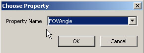
図 21.57 - FOV 角度を制御する新しい Float Property トラックを追加します。 4. キャラクターがカメラの真正面に来るまで、または Time=1.5 のあたりにタイムスライダを移動して Enter キーを押し、新しいキーを配置します。 このキーの値は、プロパティで設定されているカメラの FOVAngle プロパティの値、つまりデフォルト値の 90.0 度になります。 これはカーブのベースラインを提供するキーの役目なので、この値でかまいません。 5. タイムスライダを Time=3.0 に移動して Enter キーを押し、新しいキーを配置します。 キーを右クリックして [Set Value] を選択します。 このキーの値を 50.0 に設定します。 6. タイムスライダを Time=5.8 (2 番目のカメラカットが発生する時間) に移動して Enter キーを押し、新しいキーを配置します。 キーを右クリックして [Set Value] を選択します。 このキーの値を 25.0 に設定します。 7. タイムスライダを Time=5.9 に移動して Enter キーを押し、新しいキーを配置します。 キーを右クリックして [Set Value] を選択します。 キーの値を 12.0 に設定します。 8. タイムスライダを Time=6.1 に移動して Enter キーを押し、新しいキーを配置します。 キーを右クリックして [Set Value] を選択します。 このキーの値を 17.5 に設定します。 9. タイムスライダを Time=6.4 に移動して Enter キーを押し、新しいキーを配置します。 キーを右クリックして [Set Value] を選択します。 このキーの値を 13.5 に設定します。 10. 最後に、タイムスライダを Time=7.0 にして Enter キーを押し、最後のキーを配置します。 キーを右クリック して [Set Value] を選択します。 キーの値を 15.0 に設定します。 11. Perspective ビューポートでリアルタイムのプレビューが有効であることを確認し、Matinee の [Play] ボタンを押します。 キャラクターが最初のカメラから離れるにつれてカメラが滑らかなズームを実行し、2 番目のカメラカットの直後に少し引いた (リコイルした) 後、キャラクターをクイックズームインするのが分かります。 次のチュートリアルでは、ズームインにブラー エフェクトを追加してリコイルし、カメラがキャラクターにフォーカスを戻そうとする様子を表します。 12. マップに加えた作業を保存します。 <<<< チュートリアル終了 >>>>
チュートリアル 21.14 カメラ 1 の高度なフィールド深度エフェクト、パート I: DOF_FocusInnerRadius
1. 前のチュートリアルから続けて、Cinematics_Demo マップを開きます。 2. Kismet を開いて Matinee シーケンスをダブルクリックし、Matinee エディタを開きます。 3. このチュートリアルでは、オートフォーカス エフェクトの作成プロセスを続きとしてカメラのフィールド深度エフェクトの半径を変更します。 簡単に言えば、エフェクトの半径を 0.0 に縮めてシーン全体をぼんやりさせ、 次のチュートリアルでは使用するブラー量を変動させます。 Camera1 グループを右クリックし、[Add New Float Property Track] (新規 Float Property トラックを追加) を選択します。 表示されるダイアログのリストから DOF_FocusInnerRadius プロパティを選択し、[OK] を押します。
図 21.58 - DOF の内径を制御する Float Property トラックを新規作成します。 4. タイムスライダを Time=5.8 (2 番目のカメラカットの時間) に移動して Enter キーを押し、新しいキーを配置します。 キーを右クリックして [Set Value] を選択します。 値が 750.0 に設定されていることを確認します。 5. タイムスライダを Time=5.9 に移動して Enter キーをもう一度押し、新しいキーを配置します。 キーを右クリックして [Set Value] を選択します。 キーの値を 0.0 に設定します。 6. キーをもう一度右クリックして、[Interp Mode] (補間モード) -> [Linear] (線形) を選択します。 フィールド深度エフェクトは 0 以上の半径値を必要とするため、この設定を使ってこのポイントと次のポイントの間のカーブがゼロ以下にならないようにします。
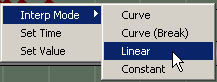
図 21.59 - Interp Mode を Linear に設定します。 7. タイムスライダを Time=6.4 に移動して Enter キーを押し、新しいキーを作成します。 このキーを右クリックして [Set Value] を選択します。 キーの値を 0.0 に設定します。 8. タイムスライダを Time=7.0 に移動して最後にもう一度 Enter キーを押し、最後のキーを配置します。 キーを右クリックして [Set Value] を選択します。 最後のキーの値を 750.0 に設定します。 9. シーケンスをスクラブ再生して、この間でシーンが完全にブラー状態になることを確認します。 10. マップに加えた作業を保存します。 <<<< チュートリアル終了 >>>>
チュートリアル 21.15 カメラ 1 の高度なフィールド深度エフェクト、パート II: DOF_BlurKernelSize
1. 前のチュートリアルから続けて、Cinematics_Demo マップを開きます。 2. Kismet を開いて Matinee シーケンスをダブルクリックし、Matinee エディタを開きます。 3. 前のチュートリアルで説明したように、このチュートリアルではフィールド深度エフェクトのブラーの量を変更し、カメラがフォーカスを合わせようとしている様子を表現します。 作成するカーブの形は、基本的にオシレーション (振動) が減衰した形になります。 Camera1 グループを右クリックし、[Add New Float Property Track] (新規 Float Property トラックを追加) を選択します。 表示されるダイアログのリストから DOF_BlurKernelSize プロパティを選択し、[OK] を押します。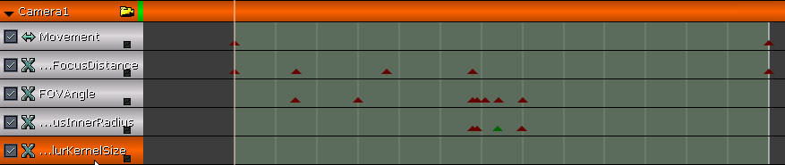
図 21.60 - ブラーの核のサイズを制御する Float Property トラックを新規作成します。 4. タイムスライダを Time=5.8 (2 番目のカメラカットの時間) に移動して Enter キーを押し、最初のキーを配置します。 キーを右クリック して [Set Value] を選択します。 キーの値が 4.0 でなければそのように設定します。 5. タイムスライダを Time=5.9 に移動して Enter キーをもう一度押し、新しい作成 キーを配置します。 キーを右クリック して [Set Value] を選択します。 キーの値を 90.0 に設定します。 この設定によりシーンは極めてぼやけた状態になります。 6. タイムスライダを Time=6.0 に移動して Enter キーを押し、新しいキーを配置します。 キーを右クリックして [Set Value] を選択します。 キーの値を 16.0 に設定します。 7. タイムスライダを Time=6.1 に移動して Enter キーを押し、新しいキーを作成します。 キーを右クリック して [Set Value] を選択します。 キーの値を 65.0 に設定します。 8. タイムスライダを Time=6.25 に移動して Enter キーを押し、新しいキーを配置します。 キーを右クリックして [Set Value] を選択します。 キーの値を 8.0 に設定します。 9. タイムスライダを Time=6.4 に移動して Enter キーを押し、新しいキーを作成します。 キーを右クリック して [Set Value] を選択します。 このキーの値を 25.0 に設定します。 10. タイムスライダを Time=7.0 に移動して最後にもう一度 Enter キーを押し、最後のキーを配置します。 キーを右クリックして [Set Value] を選択します。 最後のキーの値を 4.0 に設定します。 11. Perspective ビューポートでリアルタイムのプレビューが有効であることを確認し、Matinee の [Play] ボタンを押します。 好きなようにエフェクトの調節または変更を加えてください。
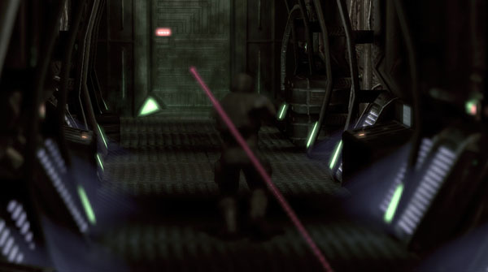
図21.61 - さまざまなブラーの感覚がつかめたと思います。 12. マップに加えた作業を保存します。 <<<< チュートリアル終了 >>>>
チュートリアル 21.16 カメラ 2 のズーム
1. 前のチュートリアルから続けて、Cinematics_Demo マップを開きます。 2. Kismet を開いて Matinee シーケンスをダブルクリックし、Matinee エディタを開きます。 3. このチュートリアルでは、2 番目のカメラがキャラクターへのクイックズームインを開始し、キャラクターがカメラに近づくにつれてズームアウトするように設定します。 Camera2 グループを右クリックし、[Add New Float Property Track] (新規 Float Property トラックを追加) を選択します。 表示されるダイアログのリストから FOVAngle プロパティを選択し、[OK] を押します。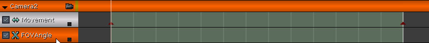
図 21.62 - この新しいトラックで Camera2 の FOV 角を制御します。 4. タイムスライダを Time=3.7 (最初のカメラカットの時間で、2 番目のカメラがアクティブになるとき) に移動し、Enter キーを押して新しいキーを配置します。 5. キーを右クリックして [Set Value] を選択します。 キーの値を 10.0 に設定します。 この設定により、キャラクターがビューのほとんどを占領します。 6. 次に、タイムスライダを Time=5.8 (2 番目カメラカットの時間で、このカメラがアクティブでなくなったとき) に移動し、Enter キーを押して新しいキーを配置します。 7. 新しいキーを右クリックして [Set Value] を選択します。 このキーの値を 90.0 に設定します。 これはカメラ視野のデフォルト設定で、キャラクターが近づくにつれてズームアウトします。
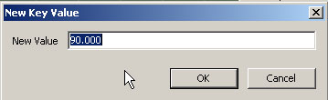
図 21.63 - Time=5.8 でカメラはズームアウトして通常の視野に戻ります。 8. 右下隅にある小さなボックスを押して、カーブ エディタにトラックのカーブ情報を送信し、ツールバーの [Toggle Curve Editor] ボタンを押してカーブ エディタを開きます。 9. カーブ エディタでカーブの 2 番目のポイントを選択すると、その接線ハンドルが表示されます。 Ctrl キーを押しながら左側の接線ハンドルを左クリックし、カーブが S 字の形から U の右半分の形になるまでマウスをドラッグします。 これによって、ズーム速度が最初は遅く、キャラクターが接近すると速くなります。
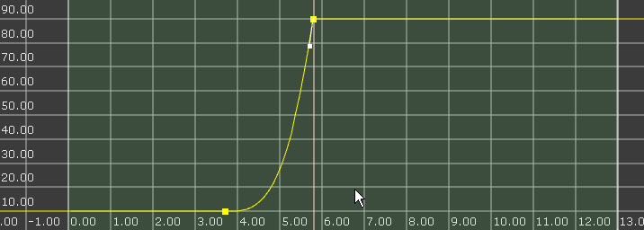
図 21.64 - この図のようにカーブを形成します。 10. Perspective ビューポートでリアルタイムのプレビューが有効であることを確認し、Matinee の [Play] ボタンを押してズームをプレビューします。 調整が必要であれば行ってください。 11. マップに加えた作業を保存します。 <<<< チュートリアル終了 >>>>
チュートリアル 21.17 カメラ 2 のフィールド深度エフェクト
1. 前のチュートリアルから続けて、Cinematics_Demo マップを開きます。 2. このチュートリアルでは 2 番目のカメラの設定を続けて、最初のカメラの設定とほぼ同じ方法でフィールド深度エフェクトの焦点距離を設定します。 同じ Kismet ネットワークを使用して距離を記録しますが、ここではキャラクターと 2 番目のカメラの距離になります。 ビューポートで 2 番目のカメラを選択して Kismet を開きます。 3. Get Distance アクションの B リンクにつながれた変数を右クリックし、[Assign CameraActor_1 to Object Variable(s)] (CameraActor_1 をオブジェクト変数に割り当て) を選択します。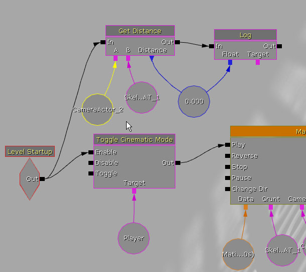
図 21.65 - 次に、骨格メッシュから Camera2 までの距離を調べます。 4. 前回と同様にエディタでマップを再生して、画面に出力される距離の値を書き留めます。 各カメラカットの時間で値を探してください。 書き留めた値を以下の値と比較してみてください。
- 800.0
- 200.0

図 21.66 - DOF の焦点距離を制御する Float Property トラックを新規作成します。 7. タイムスライダを Time=3.7 (最初のカメラカットの時間) に移動して Enter キーを押し、最初のキーを配置します。 8. キーを右クリックして [Set Value] を選択します。 このキーの値を 800.0 に設定します。 9. タイムスライダを Time=5.8 (2 番目のカメラカットの時間) に移動して Enter キーを押し、新しいキーを作成します。 10. キーを右クリックして [Set Value] を選択します。 キーの値を 200.0 に設定します。 11. Perspective ビューポートでリアルタイムのプレビューが有効であることを確認し、Matinee の [Play] ボタンを押します。 必要に応じて、これらのキーの値を調整してください。
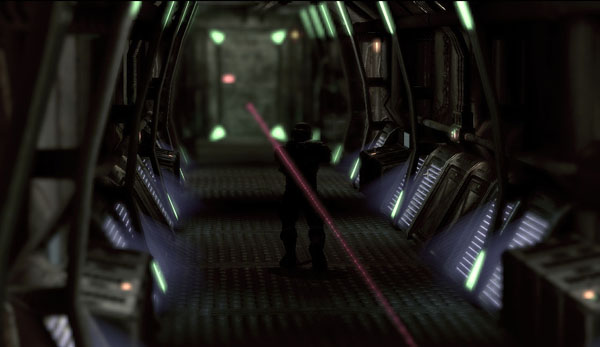
図 21.67 - Camera2 がフィールド深度エフェクトを示します。 12. マップに加えた作業を保存します。 <<<< チュートリアル終了 >>>>
チュートリアル 21.18 アクセント ライティング、パート I: ライトの配置
1. 前のチュートリアルから続けて、Cinematics_Demo マップを開きます。 2. 「ライティングによるイメージ切り離し」のセクションで、キャラクターの輪郭を回りから微妙に浮き上がらせる方法として、リムライティングの使い方を説明しました。 今までのチュートリアルを通して、シーンが暗く、カラーパレットの範囲が限られているため、ところどころでキャラクターがほとんど見えなくなってしまうことに気がつかれたかもしれません。 このチュートリアルでは、キャラクターを背景から区別するために、3 つのアクセントライトを追加してキャラクターにハイライト効果を与えます。 Genericブラウザを開いて [Actor Classes] タブを選択します。 [Actor] (アクタ) -> [Light] (ライト) -> [PointLight] (ポイントライト) の下にある PointLightMovable クラスを選択します。 次に、ビューポートを右クリックし、[Add New PointLightMovable Here] (ここに PointLightMovable を新規追加) を選択します。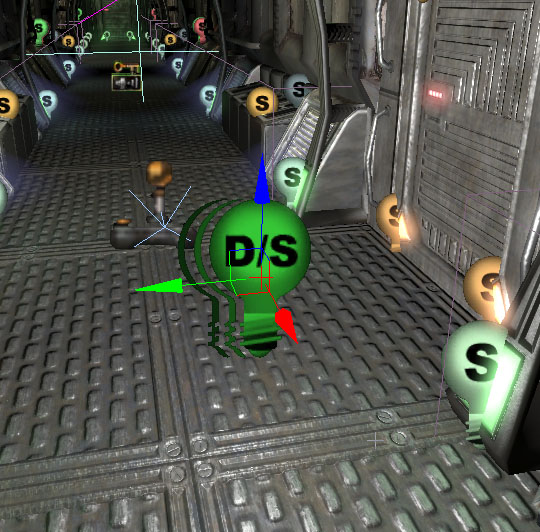
図 21.68 - 新しい PointLightMovable を作成します。 3. このライトを、通路の端、キャラクターの少し背後の右側に配置します。 注意: これは、キャラクターのメッシュが向いている方向に相対的な位置を説明しています。 4. ライトを選択した状態で、F4 を押してプロパティを開きます。 5. LightingChannels を展開し、Cinematic1 チャネルのみが選択されていることを確認します。 キャラクターがこれらのライトのみの作用を受けるようにするためです。 次のステップでは、SkeletalMeshActorMAT もこのチャネルを使用するように設定します。 6. キャラクターを選択し、F4 を押してプロパティを開きます。 LightingChannels を展開し、Cinematic1 チャネルを選択します。 他のチャネルはそのままにします。 7. Alt キーを押しながらライトの複製を作成し、正の Y 軸方向に 224 ユニット移動します。 キャラクターの左に新しいライトが作成されます。 8. もう一度 Alt キーを押しながらライトの複製を作成し、新しいライトを負の X 軸方向に 544 ユニット移動します。 これでキャラクターの前と左側に新しいライトが作成されました。

図 21.69 - キャラクターの回りに 3 つのライトが置かれ、環境が白っぽく不鮮明になりました。 9. 次に、これらの 3 つのライトがキャラクターを追いかけるように、ライトをキャラクターに関連付ける必要があります。 3 つのライトをすべて選択し、プロパティ ウィンドウを開きます。 [Lock to Selected Actors] (選択されているアクタにロック) ボタンをクリックし、次にキャラクターを選択します。 プロパティ ウィンドウに戻り、[Attachment] (関連付け) を展開して、Base プロパティの [Use Current Selection] (現在選択されている項目を使用) ボタンをクリックします。 10. マップに加えた作業を保存します。 <<<< チュートリアル終了 >>>>
チュートリアル 21.19 アクセント ライティング、パート II: 背後左側ライトの明るさを調整するトラック
1. 前のチュートリアルから続けて、Cinematics_Demo マップを開きます。 2. Kismet を開いて Matinee シーケンスをダブルクリックし、Matinee エディタを開きます。 3. このチュートリアルでは、アクセント ライトの明るさを制御するトラックの作成を開始します。このトラックが必要な理由は、いかなる時点でも 1 つのライトだけがメッシュを照らすようにする必要があるためです。 キャラクターの背後左側にあるライトを選択します。 [Group/Track] リスト内の空のエリアを右クリックして、[Add New Group] を選択します。 新しいグループに「RimLightLeftRear」という名前を付けて [OK] を押します。
図 21.70 - RimLightLeftRear という名前の新しいグループを作成します。 4. RimLightLeftRear グループを右クリックし、[Add New Float Property Track] (新規 Float Property トラックを追加) を選択します。 表示されるダイアログで、Brightness プロパティを選択して [OK] を押します。

図 21.71 - この新しいトラックで明るさを制御します。 5. タイム スライダが Time=0.0 にある状態で Enter キーを押し、最初のキーを配置します。 キーを右クリックして [Set Value] を選択します。 キーの値を 0.5 に設定します。 6. タイムスライダを Time=1.5 に移動して Enter キーを押し、新しいキーを配置します。 キーを右クリックして [Set Value] を選択します。 このキーの値を 0.0 に設定します。 この設定により、キャラクターがカメラに接近するにつれてライトがフェードアウトします。 7. マップに加えた作業を保存します。 <<<< チュートリアル終了 >>>>
チュートリアル 21.20 アクセント ライティング、パート III: 背後右側ライトの明るさを調整するトラック
1. 前のチュートリアルから続けて、Cinematics_Demo マップを開きます。 2. Kismet を開いて Matinee シーケンスをダブルクリックし、Matinee エディタを開きます。 3. このチュートリアルでは、アクセント ライトの明るさ制御するトラックの作成を続けます。 キャラクターの背後右側にあるライトを選択します。 [Group/Track] リスト内の空のエリアを右クリックして、[Add New Group] を選択します。 新しいグループに「RimLightRightRear」という名前を付けて [OK] を押します。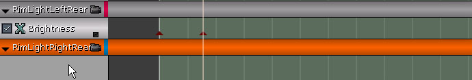
図 21.72 - 後方リムライト用のグループを新規作成します。 4. RimLightRightRear グループを右クリックし、[Add New Float Property Track] (新規 Float Property トラックを追加) を選択します。 表示されるダイアログで、Brightness プロパティを選択して [OK] を押します。
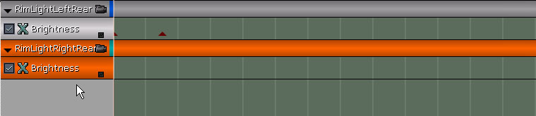
図 21.73 - この新しいトラックでライトの明るさを制御します。 5. タイム スライダ Time=1.5 に移動して Enter キーを押し、最初のキーを配置します。 キーを右クリックして [Set Value] を選択します。 キーの値を 0.0 に設定します。 6. タイムスライダを Time=3.0 に移動して Enter キーを押し、新しいキーを配置します。 キーを右クリックして [Set Value] を選択します。 キーの値を 0.5 に設定します。 7. キーをもう一度右クリックし、[Interp Mode] (補間モード) -> [Constant] (定数) を選択して、このキーと次のキーの間に段状のカーブを作成します。
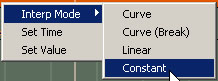
図 21.74 - 2 つのキーの間に値を設定します。 8. タイムスライダを Time=3.7 に移動して Enter キーを押し、新しいキーを作成します。 キーを右クリックして [Set Value] を選択します。 このキーの値を 0.0 に設定します。 9. このキーをもう一度右クリックして、[Interp Mode] (補間モード) -> [Constant] (定数) を再度選択し、段状のカーブを作成します。 10. タイムスライダを Time=5.8 に移動して Enter キーを押し、キーを作成します。 キーを右クリックして [Set Value] を選択します。 このキーの値を 0.5 に設定します。 11. マップに加えた作業を保存します。 <<<< チュートリアル終了 >>>>
チュートリアル 21.21 アクセント ライティング、パート IV: 前面の明るさを制御するトラック
1. 前のチュートリアルから続けて、Cinematics_Demo マップを開きます。 2. Kismet を開いて Matinee シーケンスをダブルクリックし、Matinee エディタを開きます。 3. このチュートリアルでは、アクセント ライトの明るさを制御するトラックの作成を続けます。 キャラクターの背後左側にあるライトを選択します。 [Group/Track] リスト内の空のエリアを右クリックして、[Add New Group] を選択します。 新しいグループに「RimLightFront」という名前を付けて [OK] を押します。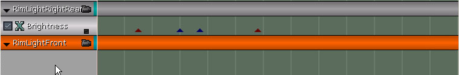
図 21.75 - 前面リムライト用のグループを新規作成します。 4. RimLightFront グループを右クリックし、[Add New Float Property Track] (新規 Float Property トラックを追加) を選択します。 表示されるダイアログで、Brightness プロパティを選択して [OK] を押します。 5. タイム スライダが Time=0.0 にある状態で Enter キーを押し、最初のキーを配置します。 キーを右クリックして [Set Value] を選択します。 キーの値を 0.0 に設定します。 6. このキーをもう一度右クリックして、[Interp Mode] (補間モード) -> [Constant] (定数) を選択します。 7. タイムスライダを Time=3.7 に移動して Enter キーを押し、新しいキーを配置します。 キーを右クリックして [Set Value] を選択します。 キーの値を 0.5 に設定します。 8. キーをもう一度右クリックして、[Interp Mode] (補間モード) -> [Linear] (線形) を選択します。 9. タイムスライダを Time=5.4 に移動して Enter キーを押し、新しいキーを配置します。 キーを右クリックして [Set Value] を選択します。 値が 0.5 に設定されていることを確認します。 10. タイムスライダを Time=5.8 に移動して Enter キーを押し、新しいキーを作成します。 キーを右クリックして [Set Value] を選択します。 キーの値を 0.0 に設定します。 11. Perspective ビューポートでリアルタイムのプレビューが有効であることを確認し、Matinee の [Play] ボタンを押します。 シネマティックを再生すると、キャラクターのシルエットが明るくなっているのが分かります。
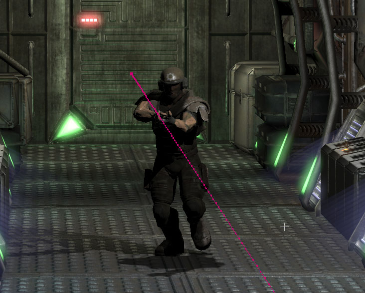
図 21.76 - キャラクターに光が当たっています。 12. マップに加えた作業を保存します。 <<<< チュートリアル終了 >>>>
チュートリアル 21.22 パーティクルの爆発エフェクト、パート I: エミッタの配置
1. 前のチュートリアルから続けて、Cinematics_Demo マップを開きます。 2. シネマティック シーケンスの骨組み設定は完了しましたが、まだ退屈です。 これは実際に何も起きていないからで、 これらの骨組みの肉付けとなるアクションを追加する必要があります。 最初にチュートリアルの流れを説明したときに、爆発について述べましたが、 これを追加して、よりダイナミックでスリルのあるシーケンスにする時が来ました。 Generic ブラウザで、CinematicsDemoContent パッケージから part_explosion アセットを選択します。 次に、ビューポートで右クリックして、[Add Actor] (アクタを追加) -> [Emitter: part_explosion] を選択します。
図 21.77 - 新しいエミッタを追加します。 3. 次は、エミッタをどこに配置するかについてですが、 この位置付けは爆発を発生させるタイミングによって決まるもので、 非常に主観的で、「ここがいい」という個人的な好みに基づいています。 これらのチュートリアルでは、爆発のタイミングはあらかじめ計算されていて、それらを使用しますが、 好きなように試してみてください。 最初の爆発は、通路の中間地点でキャラクターがコントロールボックスを通過した直後に発生します。 これらのコントロールボックスは通路に沿っていくつか配置され、正面のレッドとグリーンのライトで示されています。 ここに最初のエミッタを置きます。 Top ビューポートから見て、通路の左側にある (通過するキャラクターから見ると右側) コントロールボックスの上にエミッタを配置します Matinee を開いてタイムスライダを Time=4.3 に移動する方が作業が楽でしょう。 これで、ビューポートにおけるプレーヤーの位置が分かり、コントロールボックスの位置はそのすぐ右側になります。 何らかの理由でプレーヤーがまだコントロールボックスに達していない場合は (または既に通り過ぎている場合は)、Matinee を閉じ、骨格メッシュを X 軸方向にずらしてプレーヤーの開始位置を変更します。 ただし、これを行う場合はカメラの位置も調整することをお勧めします。
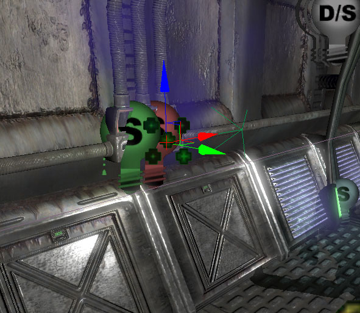
図 21.78 - コントロールボックスの上にエミッタを配置します。 4. エミッタを選択した状態で、F4 を押してプロパティを開きます。 bAutoActivate の選択を解除し、エミッタが最初はパーティクルを出さないようにします。 後半のチュートリアルで、Matinee を使って爆発エミッタをトリガします。 5. エミッタをそのまま選択した状態で、UnrealEd インターフェースの下にある DrawScale3D 設定を 4.0 にします。 爆発のサイズが元のサイズより 4 倍大きくなります。 6. Alt キーを押しながら、エミッタを通路の反対側にドラッグしてコピーを作成します。 次に、Matinee でタイムスライダを Time=4.7 に移動し、その時間のプレーヤーの位置を確認します。 左側に支柱があり、その後ろには金属チューブが走っています。 新しいエミッタを、このチューブと支柱が接する箇所に配置します。

図 21.79 - この図のように次のエミッタを配置します。 7. もう一度 Alt キーを押しながらエミッタを通路の反対側にドラッグして、別のコピーを作成します。 Matinee でタイムスライダを Time=5.075 に移動し、ビューポートでその時間のプレーヤーの位置を確認します。 プレーヤーの右に 4 つのターミナルが並んでいます。 エミッタを列内 2 番目のターミナルに配置します。
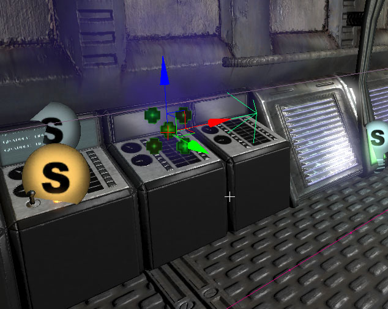
図 21.80 - 3 番目のエミッタを 2 番目のターミナルの位置に置きます。 8. もう一度 Alt キーを押しながらエミッタを通路の反対側にドラッグし、4 番目のエミッタを作成します。 Matinee でタイムスライダを Time=5.45 に移動し、ビューポートでプレーヤーの位置を確認します。 プレーヤーの左に別の支柱があり、その背後には天井に沿ってパイプが走っています。 最後のエミッタを、パイプが支柱と接する位置から 64 ユニット下に配置します。 エミッタを 64 ユニット下に移動する理由は、シネマティック中のその時点では、カメラ角度から判断してエミッタがまず見えることがないからです。 プレーヤーからは確実に見えます。
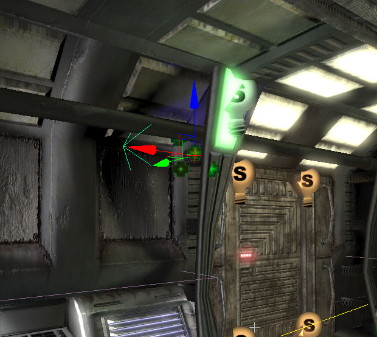
図21.81 - 4 番目のエミッタを、パイプと柱が接する位置の下に配置します。 9. マップに加えた作業を保存します。 <<<< チュートリアル終了 >>>>
チュートリアル 21.23 パーティクルの爆発エフェクト、パート II: パーティクルトグル トラック
1. 前のチュートリアルから続けて、Cinematics_Demo マップを開きます。 2. Kismet を開いて Matinee シーケンスをダブルクリックし、Matinee エディタを開きます。 3. コントロールボックスの位置にある最初のエミッタを選択します。 [Group/Track] リスト内の空のエリアを右クリックして、[Add New Group] を選択します。 新しいグループに「ExplosionEmitter1」という名前を付けて [OK] を押します。 4. ExplosionEmitter1 グループを右クリックし、[Add New Particle Toggle Track] (新規 Particle Toggle トラックを追加) を選択します。
図 21.82 - 新しい Toggle トラックでパーティクルのオンオフを切り替えます。 5. タイムスライダを Time=4.3 に移動して Enter キーを押し、新しいキーを配置します。 表示されるダイアログのリストから On を選択し、[OK] を押します。 これでエミッタがパーティクル放出を開始します。 6. 金属チューブと支柱が交わる位置にある 2 番目のエミッタを選択します。 [Group/Track] リスト内の空のエリアを右クリックして、[Add New Group] を選択します。 新しいグループに「ExplosionEmitter2」という名前を付けて [OK] を押します。 7. ExplosionEmitter2 グループを右クリックし、[Add New Particle Toggle Track] (新規 Particle Toggle トラックを追加) を選択します。
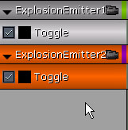
図 21.83 - 2 番目のエミッタに新しいグループと toggle トラックが追加されました。 8. タイムスライダを Time=4.7 に移動して Enter キーを押し、新しいキーを配置します。 表示されるダイアログのリストから On を選択し、[OK] を押します。 これでエミッタがパーティクル放出を開始します。 9. ターミナルの位置にある次のエミッタを選択します。 [Group/Track] リスト内の空のエリアを右クリックして、[Add New Group] を選択します。 新しいグループに「ExplosionEmitter3」という名前を付けて [OK] を押します。 10. ExplosionEmitter3 グループを右クリックし、[Add New Particle Toggle Track] (新規 Particle Toggle トラックを追加) を選択します。
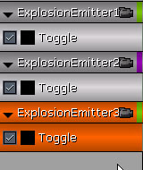
図 21.84 - 3番目のエミッタにグループと toggle トラックが追加されました。 11. タイムスライダを Time=5.075 に移動して Enter キーを押し、新しいキーを配置します。 表示されるダイアログのリストから On を選択し、[OK] を押します。 これでエミッタがパーティクル放出を開始します。 12. 最後のエミッタを選択します。 [Group/Track] リスト内の空のエリアを右クリックして、[Add New Group] を選択します。 新しいグループに「ExplosionEmitter4」という名前を付けて [OK] を押します。 13. ExplosionEmitter4 グループを右クリックし、[Add New Particle Toggle Track] (新規 Particle Toggle トラックを追加) を選択します。
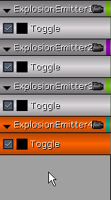
図 21.85 - 4 番目のエミッタにもトラックトラックが追加されました。 14. タイムスライダを Time=5.45 に移動して Enter キーを押し、新しいキーを配置します。 表示されるダイアログのリストから On を選択し、[OK] を押します。 これでエミッタがパーティクル放出を開始します。 15. Perspective ビューポートでリアルタイムのプレビューが有効であることを確認し、Matinee の [Play] ボタンを押します。 キャラクターがエミッタを通過すると爆発エフェクトがトリガされます。
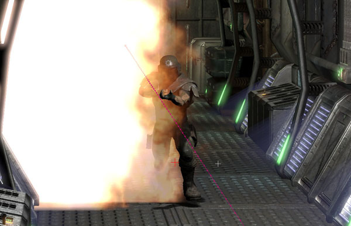
図 21.86 - 爆発が起きるのが見えます。 16. さて、問題がひとつ残されています。 ループバック再生にすると、2 度目以降はエミッタが機能していないことがわかります。 これは、エミッタがただ発煙しているだけで、再度爆発するようにキューに送られていないためです。 シーケンスの開始時に各エミッタをキーをオフに設定することで、この問題は簡単に修正できます。 ここまで学習したスキルを用いて、各エミッタの Time=0 の位置にキーを追加し、シーケンスの始めにこれをオフに切り替えてください。 17. マップに加えた作業を保存します。 <<<< チュートリアル終了 >>>>
チュートリアル 21.24 爆発ライト、パート I: ライトの配置
1. 前のチュートリアルから続けて、Cinematics_Demo マップを開きます。 2. 爆発が設定され、キャラクターが通り過ぎると発砲するようになりましたが、爆発による光や爆音など、まだ足りないものがあります。 このチュートリアルでは、各エミッタの位置にライトを配置して、その Brightness プロパティが次のチュートリアルで作成するトラックによって制御されるようにします。 その次のチュートリアルではサウンドを追加します。 Genericブラウザを開いて [Actor Classe] (アクタクラス) タブを選択します。 [Actor] (アクタ) -> [Light] (ライト) -> [PointLight] (ポイントライト) の下にある PointLightToggleable クラスを選択します。 3. ビューポートで、最初のエミッタ位置のコントロールボックスを右クリックし、[Add PointLightToggleable Here] を選択します。
図 21.87 - 最初のエミッタの位置に PointLightToggleable を作成します。 4. ライトを選択した状態で、F4 を押してプロパティを開きます。 LightColor プロパティを次のように設定します。
- A: 0
- B: 0
- G: 128
- R: 255
チュートリアル 21.25 爆発ライト、パート II: Brightness トラック
1. 前のチュートリアルから続けて、Cinematics_Demo マップを開きます。 2. Kismet を開いて Matinee シーケンスをダブルクリックし、Matinee エディタを開きます。 3. 最初の爆発エミッタの位置にあるライトを選択します。 Matinee で [Group/Track] リスト内の空のエリアを右クリックして、[Add New Group] を選択します。 新しいグループに「ExplosionLight1」という名前を付けて [OK] を押します。
図 21.88 - 最初の Explosion Light のグループを新規作成します。 4. このグループに新規 Float Property トラックを追加し、プロパティを Brightness に設定します。 5. タイムスライダを Time=4.3 に移動して Enter キーを押し、キーを設定します。 キーを右クリックして [Set Value] を選択します。 キーの値を 0.0 に設定します。 6. タイムスライダを Time=4.35 に移動して Enter キーをもう一度押し、別のキーを配置します。 キーを右クリックして [Set Value] を選択します。 このキーの値を 2.0 に設定します。 7. タイムスライダを Time=4.7 に移動して Enter キーを押し、新しいキーを作成します。 キーを右クリックして [Set Value] を選択します。 このキーの値を 0.0 に設定します。 8. ExplosionLight1 グループを選択して右クリックします。 [Duplicate Group] (グループを複製) を選択し、新しいグループに「ExplosionEmitter2」という名前を付けます。

図 21.89 - グループを複製して 2 番目のグループを作成します。 9. ビューポートで 2 番目の爆発エミッタに位置するライトを選択します。 Kismet で、ExplosionLight2 リンクを右クリックして [New Object Var Using PointLightToggleable_2] を選択します。 注意: ライトの実際の名前が上に記されている名前と異なる場合があります。 10. ExplosionLight2 グループのキーを、以下の時間ポイントに移動します (時間は左から右方向にキーと対応しています)。
- 最初のキー: Time = 4.7
- 2 番目の: Time = 4.75
- 3 番目のキー: Time = 5.075
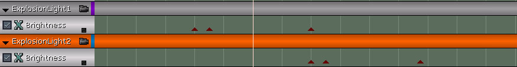
図 21.90 - これによって、2 番目の爆発による光をオフセットします。 11. ExplosionLight2 グループを選択して右クリックします。 [Duplicate Group] (グループを複製) を選択し、新しいグループに「ExplosionEmitter3」という名前を付けます。 12. ビューポートで 3 番目の爆発エミッに位置するタライトを選択します。 Kismet で、ExplosionLight3 リンクを右クリックして [New Object Var Using PointLightToggleable_3] を選択します。 注意: ライトの実際の名前が上に記されている名前と異なる場合があります。 13. ExplosionLight3 グループのキーを、以下の時間ポイントに移動します (時間は左から右方向にキーと対応しています)。
- 最初のキー: Time = 5.075
- 2 番目の: Time = 5.125
- 3 番目のキー: Time = 5.45
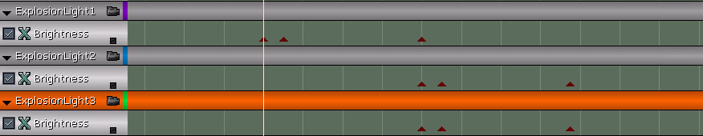
図 21.91 - グループを複製して 4 番目のグループを作成します。 15. ビューポートで 4 番目の爆発エミッタに位置するライトを選択します。 Kismet で、ExplosionLight4 リンクを右クリックして [New Object Var Using PointLightToggleable_0] を選択します。 注意: ライトの実際の名前が上に記されている名前と異なる場合があります。 16. ExplosionLight4 グループのキーを、以下の時間ポイントに移動します (時間は左から右方向にキーと対応しています)。
- First Key: Time = 5.45
- Second Key: Time = 5.5
- 3 番目のキー: Time = 5.85

図 21.92 - 爆発によりシーンが明るく照らし出されます。 18. マップに加えた作業を保存します。 <<<< チュートリアル終了 >>>>
チュートリアル 21.26 爆発音
1. 前のチュートリアルから続けて、Cinematics_Demo マップを開きます。 2. Kismet を開いて Matinee シーケンスをダブルクリックし、Matinee エディタを開きます。 3. Generic ブラウザで、CinematicsDemoContent パッケージから soundCue_explosion アセットを選択します。 4. Matinee に戻り、[Group/Track] リスト内の空のエリアを右クリックして、[Add New Group] を選択します。 新しいグループに「ExplosionSounds」という名前を付けて [OK] を押します。
図 21.93 - ExplosionSounds という名前の新しいグループを作成します。 5. ExplosionSounds グループを右クリックし、[Add New Sound Track] (新規 Sound トラックを追加) を選択します。 6. タイムスライダを Time=4.3 に移動して Enter キーを押し、新しいキーを配置します。 キーを右クリックして [Set Sound Pitch] (サウンド ピッチを設定) を選択します。 ピッチを 0.5 に設定します。 7. ExplosionSounds グループを右クリックし、[Add New Sound Track] (新規 Sound トラックを追加) を選択します。 8. タイムスライダを Time=4.7 に移動して Enter キーを押し、新しいキーを配置します。 キーを右クリックして [Set Sound Pitch] を選択します。 ピッチを 0.5 に設定します。 9. ExplosionSounds グループを右クリックし、[Add New Sound Track] (新規 Sound トラックを追加) を選択します。 10. タイムスライダを Time=5.075 に移動して Enter キーを押し、新しいキーを配置します。 キーを右クリックして [Set Sound Pitch] を選択します。 ピッチを 0.5 に設定します。 11. ExplosionSounds グループを右クリックし、[Add New Sound Track] (新規 Sound トラックを追加) を選択します。 12. タイムスライダを Time=5.45 に移動して Enter キーを押し、新しいキーを配置します。 キーを右クリックして [Set Sound Pitch] を選択します。 ピッチを 0.5 に設定します。

図 21.94 - 爆発音が 4 回発生します。 13. Perspective ビューポートでリアルタイムのプレビューが有効であることを確認し、Matinee の [Play] ボタンを押します。 爆発エフェクトに合わせて爆発音が再生されます。 14. マップに加えた作業を保存します。 <<<< チュートリアル終了 >>>>
チュートリアル 21.27 イベージョン (回避動作) アニメーション トラック、パート I: キーの作成
1. 前のチュートリアルから続けて、Cinematics_Demo マップを開きます。 2. Kismet を開いて Matinee シーケンスをダブルクリックし、Matinee エディタを開きます。 3. ベースアニメーションの再生が完成したので、次はシーケンス中の爆発発生箇所に、イベージョン (evasion) アニメーションの身をかわす動作をブレンドしましょう。 Grunt グループを右クリックし、[Add New Anim Control Track] (新規 Anim Control トラックを追加) を選択します。 表示されるダイアログのリストから FullBody スロットを選択し、[OK] を押します。
図 21.95 - Grunt グループに新しい Anim conttrol トラックを追加します。 4. タイムスライダを Time=4.3 に移動して Enter キーを押し、キーを配置します。 表示されるダイアログのリストから DvLt01 アニメーションを選択し、[OK] を押します。 新しいキーを右クリックして [Set Play Rate] (再生速度を設定) を選択します。 このアニメーションの再生速度を 3.0 に設定します。 これでアニメーションの速度が上がります。 5. タイムスライダを Time=4.7 に移動して Enter キーを押し、キーを配置します。 表示されるダイアログのリストから DvRt01 アニメーションを選択し、[OK] を押します。 新しいキーを右クリックして [Set Play Rate] を選択します。 このアニメーションの再生速度を 3.38 に設定します。 6. タイムスライダを Time=5.075 に移動して Enter キーを押し、キーを配置します。 表示されるダイアログのリストから DvLt01 アニメーションを選択し、[OK] を押します。 新しいキーを右クリックして [Set Play Rate] を選択します。 このアニメーションの再生速度を 3.25 に設定します。 7. タイムスライダを Time=5.45 に移動して Enter キーを押し、キーを配置します。 表示されるダイアログのリストから DvFd01 アニメーションを選択し、[OK] を押します。 新しいキーを右クリックして [Set Play Rate] を選択します。 このアニメーションの再生速度を 3.3 に設定します。 8. タイムスライダを Time=5.83 に移動して Enter キーを押し、キーを配置します。 表示されるダイアログのリストから Run_Fwd_Rdy_01 アニメーションを選択、[OK] を押します。 新しいキーを右クリックして [Set Play Rate] を選択します。 このアニメーションの再生速度を 0.25 に設定します。
図 21.96 - 最後のアニメーションが追加されました。 9. マップに加えた作業を保存します。 <<<< チュートリアル終了 >>>>
チュートリアル 21.28 イベージョン (回避動作) アニメーション トラック、パート II: カーブの調整
1. 前のチュートリアルから続けて、Cinematics_Demo マップを開きます。 2. Kismet を開いて Matinee シーケンスをダブルクリックし、Matinee エディタを開きます。 3. 各アニメーションを再生するキーが配置されたので、次はこのトラックのカーブを調整し、このトラックのアニメーションでベースアニメーション トラックのアニメーションをオーバーライドする必要があります。 トラックの右下隅にある小さなボックスをクリックして、カーブ エディタに 2 番目の Anim Control トラックのカーブ情報を送信し、ツールバーの [Toggle Curve Editor] (カーブ エディタの表示をトグル) ボタンを押してカーブ エディタを開きます。 現在このカーブは真っ直ぐな線として現れます。 4. Time=0.0 の位置で Ctrl キーを押しながらカーブを左クリックし、値が 0.0 のポイントをカーブの上に作成します。 このポイントを選択し、カーブ エディタのツールバーにある [Constant] 接線ボタンを押ます。
図 21.97 - Time=0.0 に constant キーを作成します。 5. Time=4.3 の位置で Ctrl キーを押しながらカーブを左クリックし、カーブの上にポイントを作成します。 ポイントを右クリックして [Set Value] を選択します。 ポイントの値を 1.0 に設定します。 このポイントを選択し、カーブ エディタのツールバーにある [Linear] 接線ボタンを押ます。 これにより、このトラックのアニメーションは Time=4.3 (最初の爆発の時間)に開始するベースアニメーションをオーバーライドします。
図 21.98 - アニメーショントラックが、先に作成したベーストラックをオーバーライドします。 6. Time=5.75 の位置で Ctrl キーを押しながらカーブを左クリックし、カーブの上に値が 1.0 のポイントを新規作成します。 7. Time=5.85 の位置で Ctrl キーを押しながらカーブを左クリックし、カーブの上にポイントを作成します。 ポイントを右クリックして [Set Value] を選択します。 ポイントの値を 0.0 に設定します。 最後の爆発の後で、このトラックのアニメーションはベースアニメーションにブレンドインします。 8. Time=10.0 の位置で Ctrl キーを押しながらカーブを左クリックし、カーブの上にポイントを作成します。 ポイントを右クリックして [Set Value] を選択します。 ポイントの値を 1.0 に設定します。 この設定により、このトラックのアニメーションが一定時間を経て徐々にベースアニメーションとブレンドし、スローモーションに似たエフェクトが生まれ、キャラクターのみに作用します。

図 21.99 - 完成したカーブはこの図のように見えます。 9. Perspective ビューポートでリアルタイムのプレビューが有効であることを確認し、Matinee の [Play] ボタンを押します。 キャラクターが通路を走っている間はランニングアニメーションが再生されますが、爆発が発生するたびに、まずは左に身をかわし、次は右、左と避け、最後に前方宙返りをします。 さらに、爆発の後はキャラクターのアニメーションが全速疾走から低速の走りにブレンドします。 10. マップに加えた作業を保存します。 <<<< チュートリアル終了 >>>>
チュートリアル 21.29 追加アニメーション トラック、パート I: キーの配置
1. 前のチュートリアルから続けて、Cinematics_Demo マップを開きます。 2. Kismet を開いて Matinee シーケンスをダブルクリックし、Matinee エディタを開きます。 3. ベースアニメーションにイベージョンアニメーションをブレンドした再生が完成したので、3 つの横揺れアニメーションに前方宙返りのアニメーションもブレンドしてみましょう。 これは、プレーヤーは推進力によって前方に進行しているので、これらの横揺れアニメーションにも前方の動きを多少プラスするだけのことです。 Grunt グループを右クリックし、[Add New Anim Control Track] (新規 Anim Control トラックを追加) を選択します。 表示されるダイアログのリストから FullBody スロットを選択し、[OK] を押します。図 21.100 - Grunt グループに Anim conttrol トラックをもうひとつ追加します。 4. タイムスライダを Time=4.3 に移動して Enter キーを押し、キーを配置します。 表示されるダイアログのリストから DvFd01 アニメーションを選択し、[OK] を押します。 新しいキーを右クリックして [Set Play Rate] を選択します。 このアニメーションの再生速度を 3.0 に設定します。 5. タイムスライダを Time=4.7 に移動して Enter キーを押し、キーを配置します。 表示されるダイアログのリストから DvFd01 アニメーションを選択し、[OK] を押します。 新しいキーを右クリックして [Set Play Rate] を選択します。 このアニメーションの再生速度を 3.38 に設定します。 6. タイムスライダを Time=5.075 に移動して Enter キーを押し、キーを配置します。 表示されるダイアログのリストから DvFd01 アニメーションを選択し、[OK] を押します。 新しいキーを右クリックして [Set Play Rate] を選択します。 このアニメーションの再生速度を 3.25 に設定します。 7. 進行中の作業を保存します。 <<<< チュートリアル終了 >>>>
チュートリアル 21.30 追加アニメーション トラック、パート II: カーブの調整
1. 前のチュートリアルから続けて、Cinematics_Demo マップを開きます。 2. Kismet を開いて Matinee シーケンスをダブルクリックし、Matinee エディタを開きます。 3. 追加アニメーションを再生するキーが配置されたので、次はこのトラックのカーブを調整し、このトラックのアニメーションをイベージョンアニメーション トラックのアニメーションにブレンドする必要があります。 トラックの右下隅にある小さなボックスをクリックして、カーブ エディタに 3 番目の Anim Control トラックのカーブ情報を送信し、ツールバーの [Toggle Curve Editor] ボタンを押してカーブ エディタを開きます。 エディタの開始時は、このカーブは平坦な線です。図 21.101 - 作業を開始したときのカーブはこの図のように見えます。 4. Time=4.3 の位置で Ctrl キーを押しながらカーブを左クリックし、値が 0.0 のポイントをカーブの上に作成します。 このポイントを選択し、カーブ エディタのツールバーにある [Constant] 接線ボタンを押ます。 5. Time=4.4 の位置で Ctrl キーを押しながらカーブを左クリックし、カーブの上にポイントを作成します。 ポイントを右クリックして [Set Value] を選択します。 ポイントの値を 0.5 に設定します。 6. Time=4.7 の位置で Ctrl キーを押しながらカーブを左クリックし、カーブの上にポイントを作成します。 ポイントを右クリックして [Set Value] を選択します。 ポイントの値を 0.0 に設定します。 7. Time=4.8 の位置で Ctrl キーを押しながらカーブを左クリックし、カーブの上にポイントを作成します。 ポイントを右クリックして [Set Value] を選択します。 ポイントの値を 0.375 に設定します。 8. Time=5.075 の位置で Ctrl キーを押しながらカーブを左クリックし、カーブの上にポイントを作成します。 ポイントを右クリックして [Set Value] を選択します。 ポイントの値を 0.0 に設定します。 9. Time=5.175 の位置で Ctrl キーを押しながらカーブを左クリックし、カーブの上にポイントを作成します。 ポイントを右クリックして [Set Value] を選択します。 ポイントの値を 0.25 に設定します。 10. Time=5.4 の位置で Ctrl キーを押しながらカーブを左クリックし、カーブの上にポイントを作成します。 ポイントを右クリックして [Set Value] を選択します。 ポイントの値を 0.0 に設定します。
図 21.102 - 最後には、カーブはこの図のようになります。 11. Perspective ビューポートでリアルタイムのプレビューが有効であることを確認し、Matinee の [Play] ボタンを押します。 違いはわずかですが、アニメーションに信憑性が加味されています。 さらに、爆発の後はキャラクターのアニメーションが全速疾走から低速の走りにブレンドします。 12. マップに加えた作業を保存します。 <<<< チュートリアル終了 >>>>
チュートリアル 21.31 キャラクターの動きの仕上げ
1. 前のチュートリアルから続けて、Cinematics_Demo マップを開きます。 2. Kismet を開いて Matinee シーケンスをダブルクリックし、Matinee エディタを開きます。 3. キャラクターが爆発をよける動作のアニメーションが完成したので、これらのアニメーションが一致するようにキャラクターの Movement トラックを調整します。 Movement トラックが選択されていることを確認します。 タイムスライダを Time=4.3 に移動して Enter キーを押し、キーを配置します。 このキーを選択した状態で、ビューポートで、通路中央のキャラクターを右方向に約 48 ユニットの位置に移動します。 これで爆発が発生する場所に近くなります。図 21.103 - 最初のキーはキャラクターを右方に動かします。 4. タイムスライダを Time=4.7 に移動して Enter キーを押し、新しいキーを配置します。 このキーを選択した状態で、ビューポートで、通路中央のキャラクターを左方向に約 48 ユニットの位置に移動します。
図 21.104 - これでキャラクターは左方向に駆けているように見えます。 5. タイムスライダを Time=5.075 に移動して Enter キーを押し、新しいキーを配置します。 このキーを選択した状態で、ビューポートで、通路中央のキャラクターを右方向に約 48 ユニットの位置に移動します。 6. タイムスライダを Time=5.45 に移動して Enter キーを押し、新しいキーを配置します。 このキーを選択した状態で、ビューポートで、通路中央のキャラクターを左方向に約 48 ユニットの位置に移動します。 7. タイムスライダを Time=5.75 に移動して Enter キーを押し、新しいキーを配置します。 このキーを選択した状態で、ビューポートで通路中央にキャラクターを移動します。

図 21.105 - キャラクターを通路の中央に戻します。 8. Perspective ビューポートでリアルタイムのプレビューが有効であることを確認し、Matinee の [Play] ボタンを押します。 通路をを走り行くキャラクターが、爆発によって本当に身をかわし、周囲にぶつかっているように見えます。 9. マップに加えた作業を保存します。 <<<< チュートリアル終了 >>>> 最後になりましたが、シネマティック シーケンスの作成には不確実な展開があります。 これらのチュートリアルをすべて終えても、おそらくは自分のやり方で多少手を加えたり、大幅に変更することでより納得できる分野が見つかることでしょう。 特定のオブジェクトの配置、アニメーションのタイミング、それから何よりもスタイルセンスと依存するものです。 自由に試し、必要に応じて手を加えて、もちろん、十分に練習してください。 物語の語り手としての腕を上げるには、Unreal で作業していても、本質的には映写技師と同じであるということを忘れないでください。 ビデオを鑑賞して映画撮影とストーリー展開を勉強すると役に立ちます。